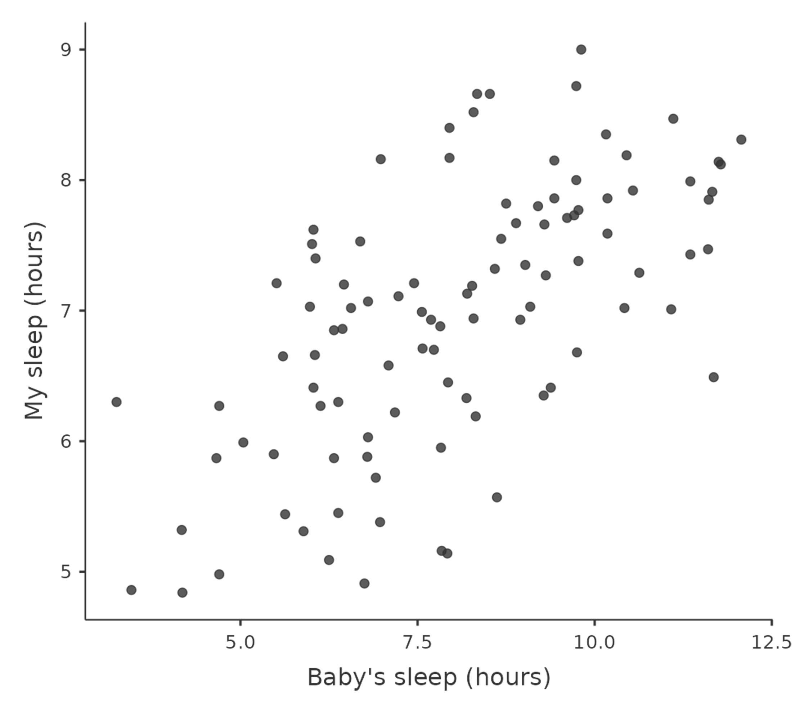
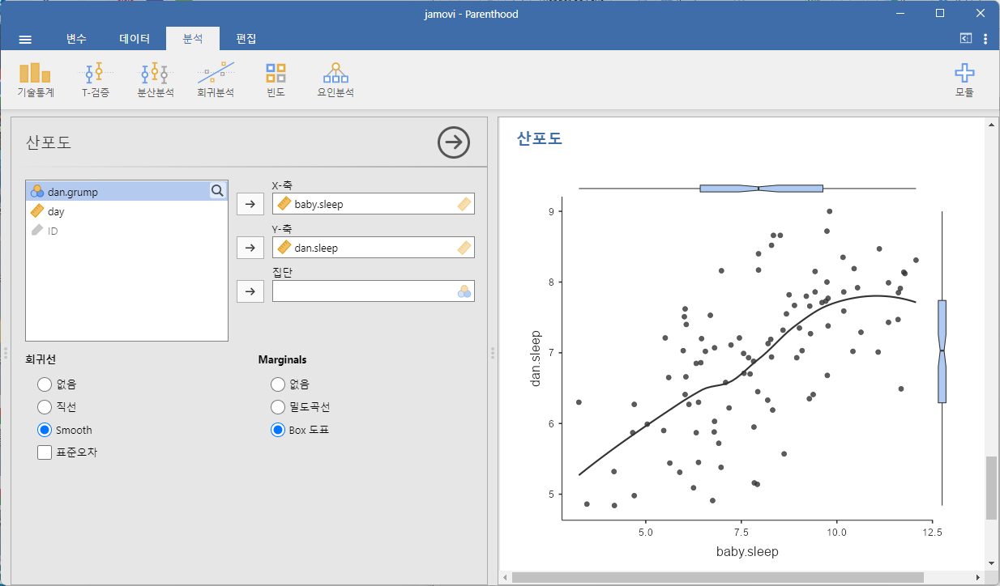
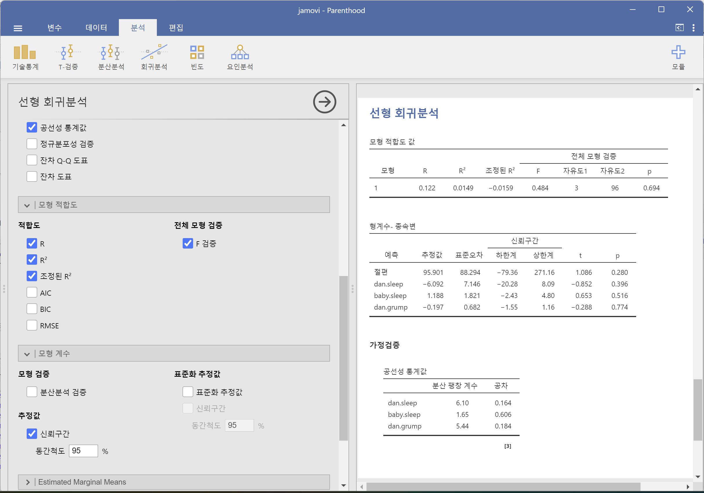

| 변수 | 최소값 | 최대값 | 평균 | 중앙값 | 표준 편차 | 사분위 범위 (IQR) |
|---|---|---|---|---|---|---|
| dani.grump | 41 | 91 | 63.71 | 62 | 10.05 | 14 |
| dani.sleep | 4.84 | 9.00 | 6.97 | 7.03 | 1.02 | 1.45 |
| baby.sleep | 3.25 | 12.07 | 8.05 | 7.95 | 2.07 | 3.21 |
12 상관관계와 선형회귀
이 장의 목표는 상관관계(correlation) 와 선형회귀(linear regression) 를 소개하는 것입니다. 이는 연속형 예측변수와 연속형 결과변수 사이의 관계를 분석할 때 통계학자들이 사용하는 표준적 도구입니다.
12.1 상관관계
이 절에서는 데이터의 변수들 사이의 관계를 설명하는 방법에 대해 논의하겠습니다. 이를 위해 주로 변수들 사이의 상관관계 에 대해 이야기하려고 합니다. 이를 위해 데이터가 좀 필요할 것 같습니다(Table 12.1).
12.1.1 데이터
모든 부모들에게 중요한 주제인 수면에 대해 이야기해 봅시다. 우리가 사용할 데이터는 가상의 것이지만 실제 사건을 기반으로 합니다. 가령, 내 유아기 아들의 수면 습관이 내 기분에 얼마나 영향을 미치는지 궁금하다고 가정해 보겠습니다. 내 성마름 또는 예민한 정도를 0 (전혀 예민하지 않음)에서 100 (매우, 매우 예민한 상태)까지의 척도로 매우 정밀하게 평가할 수 있다고 가정해 봅시다. 또한, 나는 내 예민함 정도와 수면 패턴, 그리고 내 아들의 수면 패턴을 꽤 오랜 기간 동안 측정해 왔다고 가정해 봅시다. 이를 100일 동안 측정했다고 하겠습니다. 그리고, 나는 데이터 괴짜이므로 이 데이터를 parenthood.csv 라는 파일로 저장해 두었습니다. 데이터를 로드하면 이 파일에는 dani.sleep, baby.sleep, dani.grump, day라는 네 개의 변수가 포함되어 있음을 알 수 있습니다. 이 데이터를 처음 로드할 때 jamovi가 각 변수의 데이터 유형을 올바르게 추정하지 못할 수도 있으므로 이를 수정해야 합니다. dani.sleep, baby.sleep, dani.grump, day는 연속형 변수로 지정할 수 있으며, ID는 명목형(정수) 변수로 지정할 수 있습니다.1
다음으로, 기본적인 기술 통계를 살펴보고, 세 가지 주요 변수 각각에 대한 그래픽 표현을 제공하기 위해 Figure 12.1 처럼 히스토그램을 그립니다. 한 가지 주의할 점은 jamovi가 수십 개의 서로 다른 통계를 계산할 수 있다고 해서 모든 통계를 보고해야 하는 것은 아니라는 것입니다. 만약 내가 이 내용을 보고서에 작성한다고 하면, 나와 독자들에게 가장 흥미로운 통계들을 선택하고, 그것들을 Table 12.1 같이 깔끔하고 단순한 표로 정리할 것입니다.2 표를 만들 때 모든 항목에 “사람이 읽기 쉬운” 이름을 부여하는 것이 항상 좋은 습관입니다. 또한, 내가 충분한 수면을 취하지 못하고 있다는 것도 알 수 있습니다. 이것은 좋은 습관은 아니지만, 다른 부모들에게 물어보면 일반적인 일이라고 합니다.


Tip 12.1. 실습: Parenthood 데이터
이 실습을 하려면 Tip 3.1 을 수행하여 lsj-data 모듈이 설치되어 있어야 합니다.
‘파일’-‘열기’-’데이터 라이브러리’를 메뉴에서 선택합니다. 그러면 ’learning statistics with jamovi’라는 폴더가 보일 것입니다. 이 폴더를 선택합니다. 이미 이전 실습에서 이 폴더를 선택했으면 바로 이 폴더가 열릴 수도 있습니다.
데이터 라이브러리 목록에서 ’Parenthood’를 선택합니다.
스프레드시트 창에서 각 변수의 이름을 더블클릭하여 각 변수의 척도유형과 데이터 유형이 제대로 설정되어 있는지 확인하고 필요하면 이를 정정합니다.
ID: 아이디, 정수dan.sleep,baby.sleep: 연속변수, 소수dan.grump: 명명척도, 정수day: 연속변수, 정수
- 다음 단계를 거쳐 주요 변수에 대한 기술통계를 수행합니다.
- ‘분석’-‘기술통계’-‘기술통계’ 메뉴를 선택합니다.
dan.sleep,baby.sleep,dan.grump를 ‘변수’ 상자로 이동합니다.- ‘기술통계’ 드롭다운에서 ’Variable across rows’로 하여 기술통계량이 행으로 배열되도록 합니다.
- ‘도표’ 옵션에서의 ’히스토그램’을 체크합니다.
12.1.2 관계의 강도와 방향
두 변수가 얼마나 밀접한 관계가 있는지 대략적으로 알고자 한다면 산점도를 그려볼 수 있습니다. 이에 대해 조금 더 구체적으로 말해 보죠. 예를 들어, baby.sleep과 dani.grump 사이의 관계(Figure 12.2 (a), 왼쪽)와 dani.sleep과 dani.grump 사이의 관계(Figure 12.2 (b), 오른쪽)를 비교해 봅시다. 이 두 그래프를 나란히 보면, 두 경우 모두 질적으로 같은 관계를 보입니다: 더 많은 수면은 더 적은 예민함과 관련이 있습니다! 그러나, dani.sleep과 dani.grump 사이의 관계가 baby.sleep과 dani.grump 사이의 관계보다 더 강하다는 것도 분명합니다. 오른쪽 그래프가 왼쪽 그래프보다 “깔끔한” 형태를 보입니다. 즉, 내 기분을 예측하려면 내 아들이 몇 시간 잤는지를 아는 것이 조금은 도움이 되지만, 내가 몇 시간 잤는지를 아는 것이 더 유용합니다.

baby.sleep과 dani.grump (왼쪽) 및 dani.sleep과 dani.grump (오른쪽) 사이의 관계를 보여주는 산점도
반면, Figure 12.3 의 두 산점도를 살펴보겠습니다. baby.sleep과 dani.grump 사이의 산점도(왼쪽)와 baby.sleep과 dani.sleep 사이의 산점도(오른쪽)를 비교하면, 관계의 강도는 비슷하지만 방향이 다릅니다. 즉, 내 아들이 더 많이 잘수록 나는 더 많이 잘 수 있습니다(오른쪽, 양의 관계). 하지만 내 아들이 더 많이 잘수록 나는 덜 예민하게 됩니다(왼쪽, 음의 관계).

baby.sleep과 dani.grump (왼쪽) 및 baby.sleep과 dani.sleep (오른쪽) 사이의 관계를 보여주는 산점도
Tip 12.2. 실습: 산점도 그리기
Tip 12.1 실습을 이어서 다음 변수들에 대한 산점도를 그려봅니다.
dan.sleep이dan.grump에 영향을 미치는지를 살펴보기 위해 두 변수의 산점도를 그려봅니다.
- ‘분석’-‘기술통계’-‘산포도’ 메뉴를 선택합니다. (만약 이 메뉴가 보이지 않으면,
+모듈을 클릭하여 ‘자모비 라이브러리’를 선택한 후, ’설치가능’ 탭에서scatr모듈을 찾아서 ‘설치’합니다. 설치한 후에 jamovi를 다시 시작하면 ’산포도’ 메뉴를 찾을 수 있을 것입니다.) - 왼편 ‘산포도’ 창에서
dan.sleep을 ‘X-축’ 상자로 이동합니다. - 왼편 ‘산포도’ 창에서
dan.grump를 ‘Y-축’ 상자로 이동합니다.
baby.sleep이dan.grump에 영향을 미치는지를 살펴보기 위해 두 변수의 산점도를 그려봅니다.
- ‘분석’-‘기술통계’-‘산포도’ 메뉴를 선택합니다.
- 왼편 ‘산포도’ 창에서
baby.sleep을 ‘X-축’ 상자로 이동합니다. - 왼편 ‘산포도’ 창에서
dan.grump를 ‘Y-축’ 상자로 이동합니다.
baby.sleep이dan.sleep에 영향을 미치는지를 살펴보기 위해 두 변수의 산점도를 그려봅니다.
- ‘분석’-‘기술통계’-‘산포도’ 메뉴를 선택합니다.
- 왼편 ‘산포도’ 창에서
baby.sleep을 ‘X-축’ 상자로 이동합니다. - 왼편 ‘산포도’ 창에서
dan.sleep을 ‘Y-축’ 상자로 이동합니다. - 왼편 ‘산포도’ 창에서 ‘회귀선’ 옵션에서 ’Smooth’를 선택하여 두 변수의 관계를 설명하는 추세선을 그려봅니다.
- 왼편 ‘산포도’ 창에서 ‘Marginal’ 옵션에서 ’Box 도표’를 선택하여 각 변수의 박스 도표를 그려봅니다.

12.1.3 상관계수
지금까지 살펴본 내용을 보다 명확하게 설명하기 위해 상관계수(correlation coefficient)(더 정확하게 말하자면 피어슨 상관계수)라는 개념을 도입해 봅시다. 상관계수는 전통적으로 \(r\)이라는 기호로 표현됩니다. 두 변수 \(X\) 와 \(Y\) 사이의 상관계수(때때로 \(r_{XY}\) 로 표기됨)는 -1에서 1 사이의 값을 가지는 척도로, 다음 절에서 보다 정확히 의미를 논의할 것이지만. \(r = -1\) 이면 완벽한 음의 관계를 의미하고, \(r = 1\) 이면 완벽한 양의 관계를 의미합니다. \(r = 0\) 이면 관계가 전혀 없음을 의미합니다. Figure 12.4 를 보면 다양한 상관관계가 어떻게 보이는지 확인할 수 있습니다.
피어슨 상관계수의 계산 공식은 여러 가지 방식으로 표현할 수 있습니다. 가장 간단한 방법은 두 단계로 나누어 설명하는 것입니다. 먼저, 공분산 개념을 소개하겠습니다. 두 변수 \(X\) 와 \(Y\)의 공분산은 분산을 일반화한 개념으로, 수학적으로는 간단하지만 직관적으로 해석하기에는 어려운 방식으로 두 변수 사이의 관계를 설명하는 방법입니다: \[Cov(X,Y)=\frac{1}{N-1}\sum_{i=1}^N(X_i-\bar{X})(Y_i-\bar{Y})\] \(X\)와 \(Y\)의 평균에서의 편차를 곱한 후 평균을 내는 방식이므로,3 공분산 공식은 \(X\) 와 \(Y\) 사이의 “평균 교차 곱”으로 생각할 수 있습니다. 공분산은 \(X\) 와 \(Y\) 가 전혀 관련이 없으면 정확히 0이 됩니다. 관계가 양의 방향이면 공분산도 양수이고, 관계가 음의 방향이면 공분산도 음수가 됩니다. 즉, 공분산은 상관관계의 기본적인 정성적 개념을 포착합니다. 그러나 공분산의 크기는 변수 \(X\) 와 \(Y\)의 단위에 따라 달라지므로 해석하기 어렵습니다. 더욱이, 공분산의 단위 자체가 이상합니다. 예를 들어, \(X\) 가 dani.sleep(단위: 시간)이고, \(Y\) 가 dani.grump(단위: 예민함 정도)라면, 공분산의 단위는 \(시간 \times 예민한 정도\)가 됩니다. 이게 무슨 의미인지 전혀 감이 오지 않습니다. 피어슨 상관계수 r은 공분산을 표준화하여 이러한 해석 문제를 해결합니다. 이는 \(z\)-점수가 원 점수를 표준화하는 방식과 거의 동일하게 표준편차로 나누어 값을 표준화합니다. 단, 공분산의 계산에는 두 변수가 기여하므로 표준화하려면 두 변수의 표준편차로 나누어야 합니다.4 즉, \(X\) 와 \(Y\) 사이의 상관관계는 다음과 같이 표현될 수 있습니다: \[r_{XY}=\frac{Cov(X,Y)}{\hat{\sigma}_X\hat{\sigma}_Y}\]

공분산을 표준화함으로써 앞서 논의한 공분산의 모든 좋은 특성을 유지하면서도 \(r\) 값 자체가 의미 있는 척도로 표현됩니다. \(r = 1\)은 완벽한 양의 관계를, \(r = -1\)은 완벽한 음의 관계를 나타냅니다. 이에 대한 해석을 [상관계수 해석하기] 절에서 더 자세히 설명하겠습니다. 그러나 그 전에 jamovi에서 상관계수를 계산하는 방법을 살펴보겠습니다.
12.1.4 jamovi에서 상관관계 계산하기
jamovi에서 상관관계를 계산하려면 ‘회귀분석’-‘상관행렬’ 메뉴를 클릭하면 됩니다. 네 개의 연속형 변수를 모두 오른쪽 박스로 이동시키면, Figure 12.5 같은 출력이 나타납니다.
Tip 12.3. 실습: 피어슨 상관계수 구하기
Tip 12.2 실습을 이어서 다음 연속형 변수 사이의 피어슨 상관계수를 구해봅니다.
‘분석’-‘회귀분석’-‘상관 행렬’ 메뉴를 선택합니다.
왼편의 ‘상관 행렬’ 창에서 다음을 수행하면 Figure 12.5 같은 결과를 얻을 수 있습니다.
- 상관계수를 계산할
dan.sleep,baby.sleep,day,dan.grump변수를 오른편 상자로 이동합니다. - ‘상관계수’ 옵션이 ’피어슨’으로 설정되었는지 확인합니다.
12.1.5 상관관계 해석하기
실제 데이터에서는 \(1\)과 같은 완벽한 상관관계를 거의 볼 수 없습니다. 그렇다면, 예를 들어 \(r = 0.4\)인 상관관계를 어떻게 해석해야 할까요? 정직한 답변은, 데이터의 용도와 해당 분야에서 일반적으로 나타나는 상관관계의 강도에 따라 다르다는 것입니다.
제 친구 중 한 명은 공학 분야에서 일하는데, 그는 상관계수가 \(0.95\)보다 낮으면 쓸모가 없다고 주장한 적이 있습니다(아마 과장이었겠지만요). 반면, 심리학에서도 특정 경우에는 이처럼 높은 상관관계를 기대할 수 있습니다. 예를 들어, 사람들이 유사성을 판단하는 방식을 테스트하는 대표적인 데이터 중 하나는 매우 정제되어 있어서, 이론적으로 상관계수가 \(0.9\) 이상 나오지 않으면 성공적인 모형으로 간주되지 않습니다. 하지만 지능과 관련된 기본적인 변인(예: 검사 시간, 반응 속도)을 찾을 때는 상관계수가 \(0.3\) 이상이라면 상당히 높은 값이라고 볼 수 있습니다. 즉, 상관관계의 해석은 맥락에 따라 크게 달라집니다. 그렇긴 해도, Table 12.2 에 제시된 대략적인 가이드는 일반적으로 많이 사용됩니다.
| 상관 계수 | 강도 | 방향 |
|---|---|---|
| -1.00 ~ -0.90 | 매우 강함 | 음 |
| -0.90 ~ -0.70 | 강함 | 음 |
| -0.70 ~ -0.40 | 중간 | 음 |
| -0.40 ~ -0.20 | 약함 | 음 |
| -0.20 ~ 0.00 | 무시 가능 | 음 |
| 0.00 ~ 0.20 | 무시 가능 | 양 |
| 0.20 ~ 0.40 | 약함 | 양 |
| 0.40 ~ 0.70 | 중간 | 양 |
| 0.70 ~ 0.90 | 강함 | 양 |
| 0.90 ~ 1.00 | 매우 강함 | 양 |
| 이 가이드는 어디까지나 대략적인 것입니다. 강한 관계와 약한 관계를 구분하는 절대적인 기준은 없으며, 맥락에 따라 다를 수 있습니다. | ||
그러나 여기서 절대 간과해서는 안 되는 중요한 점이 있습니다. 상관계수를 해석하기 전에 반드시 산점도를 확인해야 한다는 것입니다. 상관관계는 우리가 생각하는 의미와 다를 수 있습니다. 이를 설명하는 대표적인 예가 “Anscombe’s Quartet”(Anscombe, 1973)입니다.
Anscombe의 사분위 데이터는 네 개의 서로 다른 데이터로 구성되어 있으며, 각 데이터에는 \(X\) 변수와 \(Y\) 변수가 있습니다. 이 네 개의 데이터 모두에서 \(X\)의 평균값은 \(9\), \(Y\)의 평균값은 \(7.5\)입니다. \(X\) 변수의 표준편차는 거의 동일하며, \(Y\) 변수의 표준편차도 마찬가지입니다. 그리고 각 데이터에서 \(X\)와 \(Y\) 사이의 상관계수는 모두 \(r = 0.816\)입니다.
이 정보를 바탕으로 네 개의 데이터가 매우 유사할 것이라고 예상할 수도 있습니다. 하지만 실제로 산점도를 그려보면 전혀 다른 패턴을 보인다는 사실을 알 수 있습니다(Figure 12.6 참조). 따라서 “항상 원래 데이터를 그래프로 확인하라”는 교훈을 잊지 말아야 합니다(자세한 내용은 Chapter 5 에서 다룹니다).
상관계수는 두 변수의 선형 상관성의 강도만을 포착한다
그런데 피어슨 상관계수는 두 변수 사이의 선형 상관성에 대한 통계량이기 때문에 비선형적인 관계는 잘 포착하지는 못합니다. 다음 그림은 두 변수 사이의 피어슨 상관계수와 산점도를 보여줍니다.
- 그래프의 첫 번째 행은 선형 상관성이 높을수록 상관계수의 절대값이 커지는 것을 보여줍니다. 즉, 직선에 가까운 관계일수록 상관계수의 절대값은 1에 가까워집니다.
- 그래프의 두 번째 행은 두 변수의 관계를 나타내는 선의 기울기와 상관계수의 값은 관계가 없음을 보여줍니다. 왜냐하면 상관계수는 두 변수의 관계가 얼만큼 직선에 가까운지를 나타내므로 직선의 기울기와는 상관이 없기 때문입니다. 단, 직선의 기울기가 0이면 가로축의 변수의 변화가 세로축 변수에 전혀 영향을 주지 못하므로 두 변수의 상관계수는 0이 됩니다.
- 그래프의 마지막 행처럼 비선형적 관계가 있지만 선형 관계가 없으면 0에 가까운 상관계수 값이 나오는 것을 확인할 수 있습니다. 즉, 상관계수는 두 변수의 비선형관계를 포착하지 못합니다. 그러므로 비선형 관계는 산점도 등을 사용하여 파악해야 합니다.

12.1.6 스피어만 순위 상관계수
피어슨 상관계수는 매우 유용한 도구이지만, 몇 가지 단점이 있습니다. 그중에서도 가장 두드러지는 한 가지 문제는 이것이 두 변수 사이의 선형 관계의 강도만을 측정한다는 점입니다. 즉, 피어슨 상관계수는 데이터가 얼마나 완벽하게 직선 위에 놓이는지를 나타냅니다. 일반적으로 우리가 “관계”라고 말할 때, 이러한 선형 관계는 꽤 좋은 근사값을 제공하기 때문에 피어슨 상관계수를 계산하는 것이 유용합니다. 하지만, 항상 그런 것은 아닙니다.
피어슨 상관계수를 사용하는 것이 적절하지 않은 대표적인 사례는 한 변수(\(X\))의 증가가 다른 변수(\(Y\))의 증가로 이어지지만, 그 관계가 반드시 선형적이지는 않은 경우입니다. 예를 들어, 시험 공부에서 노력과 보상의 관계를 생각해 봅시다. 만약 어떤 과목을 공부하는 데 전혀 노력을 기울이지 않는다면(\(X = 0\)), 시험 점수(\(Y\))도 당연히 \(0\)이 될 것입니다. 그러나 약간의 노력만으로도 성적이 크게 향상될 수 있습니다. 예를 들어, 강의에 참석하기만 해도 어느 정도 내용을 배우게 되고, 수업에 참석해서 몇 가지 메모만 해도 성적이 \(35\)까지 오를 수 있습니다. 하지만 상위 성적에서는 그렇지 않습니다. 성적을 \(55\)에서 \(95\)로 끌어올리는 데는 훨씬 더 많은 노력이 필요합니다. 즉, 노력과 성적 사이의 관계를 나타내는 데이터가 있다면, 피어슨 상관계수를 적용하는 것이 오해를 불러일으킬 가능성이 큽니다.
이를 설명하기 위해 Figure 12.7 을 살펴보겠습니다. 이 그림은 어떤 수업을 듣는 10명의 학생을 대상으로, 공부한 시간과 받은 성적 사이의 관계를 나타냅니다. 이 (완전히 가상의) 데이터에서 주목할 점은 노력이 증가하면 성적도 항상 증가한다는 것입니다. 증가 폭이 크든 작든, 노력이 늘어나면 성적이 감소하는 경우는 없습니다.
이러한 데이터에 대해 표준 피어슨 상관계수를 계산하면, 학습 시간과 성적 사이의 강한 상관관계를 보여주는 상관계수 \(r = 0.91\)이 나옵니다. 그러나 이 값은 “노력이 증가하면 반드시 성적도 증가한다”는 점을 반영하지 않습니다. 여기서 우리가 진짜로 원하는 것은, 순위 관계(ordinal relationship)가 예외 없이 작동한다는 사실을 포착하는 것입니다. 즉, 학생 1이 학생 2보다 더 많은 시간을 공부했다면, 학생 1의 성적은 학생 2보다 반드시 더 높을 것이라는 사실을 보장해야 합니다. 하지만 \(r = 0.91\)은 이러한 관계를 보장하지 않습니다.

이 문제를 해결하는 방법은 매우 간단합니다. 순위 관계를 찾고 싶다면, 데이터를 서열척도(ordinal scale)로 다루면 됩니다! 즉, “공부한 시간”을 직접 측정하는 대신, 학생들을 공부한 시간에 따라 순위(rank)로 정렬합니다. 예를 들어, 가장 적은 시간(2시간) 공부한 학생 1은 가장 낮은 순위(rank = 1)를 받습니다. 그다음으로 적게 공부한 학생 4(6시간)는 rank = 2를 받습니다. 여기서 주의할 점은 “rank = 1”이 가장 낮은 순위를 의미한다는 것입니다. 일상적으로는 “rank = 1”을 가장 높은 순위(1등)로 사용할 수도 있기 때문에, 헷갈리지 않도록 조심해야 합니다. 일반적으로 순위를 작은 값부터 큰 값으로 정렬할 수도 있고, 큰 값부터 작은 값으로 정렬할 수도 있습니다. 여기서는 작은 값에서 큰 값으로 정렬하고 있으며, 이를 잊지 않도록 신경 써야 합니다.
이제, 학생들을 공부한 시간과 성적에 따라 최저 순위에서 최고 순위로 정렬한 결과를 Table 12.3 에서 확인해 보겠습니다**.
| 순위 (공부 시간) | 순위 (받은 성적) | |
|---|---|---|
| 학생 1 | 1 | 1 |
| 학생 2 | 10 | 10 |
| 학생 3 | 6 | 6 |
| 학생 4 | 2 | 2 |
| 학생 5 | 3 | 3 |
| 학생 6 | 5 | 5 |
| 학생 7 | 4 | 4 |
| 학생 8 | 8 | 8 |
| 학생 9 | 7 | 7 |
| 학생 10 | 9 | 9 |
놀랍게도, 이 두 개의 순위는 완전히 동일합니다. 즉, 가장 많은 노력을 기울인 학생이 가장 높은 성적을 받았으며, 가장 적게 노력한 학생이 가장 낮은 성적을 받았습니다. 위의 표에서 보듯이, 학습 시간과 성적의 순위가 완전히 동일하기 때문에, 이 두 순위 변수의 상관성을 분석하면 완벽한 상관관계(상관계수 = 1.0)가 나타납니다.
사실, 우리가 방금 다시 발견한 개념이 바로 스피어만 순위 상관계수(Spearman’s rank order correlation)입니다. 이는 보통 \(\rho\) (rho)로 표기되며, 피어슨 상관계수(\(r\))와 구별됩니다.
jamovi에서 스피어만의 \(\rho\)를 계산하는 방법은 간단합니다. ‘상관 행렬’ 화면에서 ‘Spearman’ 체크박스를 선택하기만 하면 됩니다.
Tip 12.4. 실습: 피어슨 상관계수 구하기
Tip 12.2 실습을 이어서 다음 연속형 변수 사이의 피어슨 상관계수를 구해봅니다.
‘분석’-‘회귀분석’-‘상관 행렬’ 메뉴를 선택합니다.
왼편의 ‘상관 행렬’ 창에서 다음을 수행하면 다음 결과를 얻을 수 있습니다.
- 상관계수를 계산할
dan.sleep,baby.sleep,day,dan.grump변수를 오른편 상자로 이동합니다. - ‘상관계수’ 옵션에서 ’Spearman’을 체크합니다.
피어슨 선형 상관계수 대 스피어만 순위 상관계수
피어슨 상관계수와 스피어만 상관계수는 모두 두 변수 사이의 관계를 측정하는 통계적 방법이지만, 그 계산 방식과 해석하는 방식이 다릅니다. 두 상관계수의 차이점은 다음과 같습니다.
| 피어슨 상관계수 (Pearson’s \(r\)) | 스피어만 상관계수 (Spearman’s \(\rho\)) | |
|---|---|---|
| 정의 | 두 변수 사이의 선형 관계 강도를 측정 | 두 변수 사이의 순위 관계 강도를 측정 |
| 적용 가능한 데이터 | 등간척도(interval scale), 비율척도(ratio scale) | 서열척도(ordinal scale) 이상이면 사용 가능 |
| 값의 범위 | -1 ~ +1 | -1 ~ +1 |
| 해석 | 0에 가까울수록 선형 관계가 약함, ±1에 가까울수록 강한 선형 관계 | 0에 가까울수록 순위 관계가 약함, ±1에 가까울수록 강한 단조(monotonic) 관계 |
스피어만 상관계수와 피어슨 상관계수의 차이를 보여주는 예를 살펴봅시다. 다음은 위키피디아에 있는 세 가지 예입니다.
이러한 특성 때문에 두 상관계수가 사용되는 경우가 다릅니다.
| 사용 상황 | 상관계수 종류 | 사용 이유 |
|---|---|---|
| 두 변수 사이의 선형 관계를 알고 싶을 때 | 피어슨 상관계수 (\(r\)) | 변수 간에 일정한 증가(혹은 감소) 관계가 있는지 확인 가능 |
| 두 변수 사이의 순위 관계(단조 관계)를 알고 싶을 때 | 스피어만 상관계수 (\(\rho\)) | 선형이 아닐 수도 있지만, 증가/감소 경향이 있는지 확인 가능 |
| 데이터가 정규분포를 따르지 않을 때 | 스피어만 상관계수 (\(\rho\)) | 순위만 사용하므로 정규성을 가정할 필요 없음 |
| 특이치가 있는 경우 | 스피어만 상관계수 (\(\rho\)) | 순위를 기반으로 계산하므로 특이치에 덜 민감함 |
| 등간척도 또는 비율척도 데이터 | 피어슨 상관계수 (\(r\)) | 변수 간 거리 차이를 그대로 활용 가능 |
| 서열척도 데이터 | 스피어만 상관계수 (\(\rho\)) | 원래 값의 크기를 고려하지 않고 순위만 비교 |
결론적으로, 피어슨 상관계수 \(r\)은 선형 관계를 측정하고, 등간척도 이상에서 사용 가능하나, 특이치에 민감하게 변화합니다. 반면, 스피어만 상관계수 \(\rho\)는 순위 관계(단조 관계)를 측정하고 서열척도 이상에서 사용 가능하고, 특이치에 덜 민감합니다. 따라서 데이터의 특성에 따라 적절한 방법을 선택하는 것이 중요합니다.
12.2 산점도
산점도(Scatterplots)는 두 변수 사이의 관계를 시각화하는 간단하지만 효과적인 도구입니다. 이는 상관관계 섹션에서 본 그림들과 같은 방식으로 활용됩니다. 일반적으로 “산점도”라는 용어를 사용할 때는 이러한 관계를 시각화하는 경우를 의미합니다.
이런 유형의 그래프에서 각 관측값은 하나의 점으로 표현됩니다. 점의 가로 위치(x 축)는 한 변수의 값을 나타내고, 세로 위치(y 축)는 다른 변수의 값을 나타냅니다.
많은 경우, 변수 사이의 인과관계(예: A가 B를 유발하는지, B가 A를 유발하는지, 또는 어떤 다른 변수 C가 A와 B를 모두 조절하는지)에 대한 명확한 의견이 없을 수 있습니다. 이러한 경우에는 어느 변수를 x축과 y축에 놓을지 크게 중요하지 않습니다.
그러나 특정 변수의 인과적 역할에 대해 강한 가설을 가지고 있거나, 어느 정도의 추측을 하고 있는 경우라면 원인(cause)이 되는 변수는 x 축에, 결과(effect)가 되는 변수는 y 축에 배치하는 것이 일반적입니다. 이를 염두에 두고, jamovi에서 산점도를 그리는 방법을 살펴보겠습니다. 이때, 상관관계를 소개할 때 사용했던 parenthood 데이터(즉, parenthood.csv)를 활용하겠습니다.
예를 들어, 나의 수면량(dani.sleep)과 다음 날 얼마나 예민한지(dani.grump)의 관계를 나타내는 산점도를 그리고 싶다고 가정해 봅시다. 이를 위해 jamovi에서 두 가지 방법을 사용할 수 있습니다. 첫 번째 방법은 ‘회귀’-‘상관 행렬’ 메뉴를 이용하여 ‘도표’ 옵션을 사용하는 것입니다. 이를 통해 Figure 12.8 같은 출력을 얻을 수 있습니다.
참고로, jamovi는 데이터 포인트 사이를 관통하는 선을 추가하는데, 이는 선형회귀 모형이란? 절에서 더 자세히 다룰 것입니다. 또한, 이 방법을 사용하면 ‘변수 밀도(Densities for variables)’ 옵션을 설정할 수 있으며, 이를 통해 각 변수의 데이터 분포를 나타내는 밀도 곡선을 추가할 수도 있습니다.
두 번째 방법은 jamovi의 추가 모듈 중 하나를 이용하는 것입니다. 이 모듈의 이름은 scatr이며, 이를 설치하려면 jamovi 화면 오른쪽 상단에 있는 ‘\(+\)’ 모듈 아이콘을 클릭하여 ‘자모비 라이브러리’ 메뉴를 엽니다. 그런 다음 ‘사용가능’ 탭에서 ‘scatr’을 찾고 ’설치’ 버튼을 누르면 됩니다.5
설치가 완료되면, ‘기술통계’ 메뉴 아래에 새로운 ‘산포도’ 명령어가 추가됩니다. 이 방법을 사용하면 Figure 12.9 같은 산점도를 생성할 수 있습니다. 첫 번째 방법과는 다소 다른 스타일이지만, 중요한 정보는 동일합니다.

12.2.1 더 정교한 옵션
종종 여러 변수 사이의 관계를 한 번에 살펴보고 싶을 때가 있습니다. 이때 산점도 행렬을 사용할 수 있습니다. jamovi에서는 ‘상관 행렬’-‘도표’ 명령을 통해 이를 생성할 수 있습니다. 예를 들어, baby.sleep 변수를 상관 분석 변수 목록에 추가하면, jamovi가 Figure 12.10 같은 산점도 행렬을 생성해 줍니다.
Tip 12.5. 실습: 산점도 그리기 - 회귀분석 메뉴 사용하기
Tip 12.2 실습을 이어서 ‘회귀분석’ 메뉴를 사용하여 산점도를 그려봅니다.
‘분석’-‘회귀분석’-‘상관 행렬’ 메뉴를 선택합니다.
왼편의 ‘상관 행렬’ 창에서 다음을 수행하면 다음 같은 결과를 얻을 수 있습니다.
- 상관계수를 계산할
dan.sleep,baby.sleep,dan.grump변수를 오른편 상자로 이동합니다. - `추가 옵션’에서 ‘Flag significant correlations’만 체크하여 상관계수 값만 나오게 하고 유의한 상관계수에는’*’ 표시가 되도록 합니다.
- ‘도표’ 옵션에서 ’상관 행렬’을 체크하여 산점도 행렬을 그립니다. 아울러 ’Densities for variables’와 ’통계’도 체크하여 산점도 행렬의 대각선에는 확률밀도 그래프를, 우상 부분에는 상관계수가 표시되록 합니다.
12.3 선형회귀 모형이란?
가장 기본적인 개념으로 보면, 선형회귀 모형은 피어슨 상관계수(상관관계 참고)의 조금 더 정교한 버전이라고 할 수 있습니다. 그러나 실제로는 훨씬 더 강력한 도구입니다.
앞에서 상관관계를 설명하기 위해 사용했던 parenthood.csv 파일로 돌아가 보겠습니다. 우리는 이 데이터에서 다니(Dani)가 항상 왜 그렇게 예민한지 찾으려 했고, 우리의 가설은 “나는 충분한 수면을 취하지 못하고 있다”는 것이었습니다. 이 관계를 살펴보기 위해 Figure 12.9 같은 산점도를 그렸고, 상관계수는 \(r = -0.90\)이었습니다. 그러나 우리가 마음속으로 상상하는 관계는 Figure 12.11(a) 같은 것입니다. 즉, 우리는 데이터의 가운데를 통과하는 직선을 머릿속으로 그립니다.
통계학에서는 이러한 선을 회귀선(regression line)이라고 합니다. 우리는 바보가 아니므로, 이 회귀선이 데이터의 가운데를 지나가도록 그립니다. 반면, Figure 12.11(b)처럼 이상한 방식으로 선을 그리는 것은 상상하기 어렵습니다.
Figure 12.11(b)에서 내가 그린 선이 데이터를 잘 “맞추지(fit)” 못하고 있다는 것은 놀라운 일이 아닙니다. 이렇게 부적절한 선을 데이터 요약 방법으로 제안하는 것은 말이 되지 않겠죠?
이것은 단순한 관찰이지만, 여기에 약간의 수학적 개념을 추가하면 매우 강력한 분석 도구가 됩니다. 이를 이해하기 위해, 고등학교 수학에서 배운 직선의 방정식을 떠올려 봅시다. 일반적으로 직선 방정식은 다음과 같이 표현됩니다.
\[y = a + bx\]
이 방정식에서 \(x\)와 \(y\)는 변수이며, \(a\)와 \(b\)는 계수(coefficient)입니다.6
- \(a\)는 y 축 절편(intercept)으로, \(x = 0\)일 때 \(y\)의 값을 의미합니다.
- \(b\)는 기울기(slope)로, \(x\) 값이 1 증가할 때 \(y\) 값이 얼마나 변하는지를 나타냅니다. 기울기가 양수이면 \(x\)가 증가하면 \(y\)가 증가하고, 음수이면 \(y\)가 감소합니다.
회귀선도 이와 똑같은 식을 사용합니다. 회귀 분석에서는 결과변수(종속변수, DV)를 \(Y\)로, 예측변수(독립변수, IV)를 \(X\)로 두고, 이를 다음과 같이 나타냅니다.
\[\hat{Y}_i = b_0 + b_1 X_i\]
이 방정식은 앞서 본 것과 거의 동일하지만, 몇 가지 추가적인 요소가 있습니다. 이를 하나씩 살펴보겠습니다.
첫째, 일반적인 \(X\)와 \(Y\)가 아니라 \(X_i\)와 \(Y_i\)를 사용한 이유는, 우리가 실제 데이터 관측값을 사용하고 있기 때문입니다. 여기서 \(X_i\)는 \(i\) 번째 관측값의 예측변수(예: \(i\) 번째 날의 수면 시간)이고, \(Y_i\)는 \(i\) 번째 날의 결과변수(예: \(i\) 번째 날의 예민함 정도)입니다. 명시적으로 수식에 표현하지는 않았지만, 이 수식이 데이터의 모든 관측치에(즉, 모든 \(i\)에 대해) 적용될 것이라고 가정하고 있습니다.
둘째, 수식의 좌변에 \(Y_i\) 대신 \(\hat{Y}_i\)을 사용하고 있습니다. 그 이유는 실제 관측값 \(Y_i\)와 회귀선이 예측한 값 \(\hat{Y}_i\) 사이의 차이를 들어내고자 하기 때문입니다.
셋째, 회귀선의 계수의 표기 방식입니다. 이전에는 \(a\)와 \(b\)를 사용했지만, 회귀 분석에서는 보통 \(b_0\)(절편)과 \(b_1\)(기울기)로 표기합니다. 통계학자들이 왜 기울기를 \(b_1\)이라고 부르기로 했는지는 모르겠지만, 중요한 점은 \(b_0\)는 절편, \(b_1\)은 기울기라는 것입니다.
이제 우리는 중요한 사실을 깨닫게 됩니다. 좋은 회귀선이든 나쁜 회귀선이든, 데이터가 선 위에 완벽하게 정확히 놓이지는 않는다는 것입니다. 즉, 실제 데이터 값 \(Y_i\)는 회귀 모형이 예측한 값 \(\hat{Y}_i\)와 항상 일치하지는 않습니다. 통계학에서는 모든 것에 이름과 숫자를 붙이는 것을 좋아하기 때문에, 예측값과 실제값 사이의 차이를 잔차(residual)라고 하며, 이를 \(\epsilon_i\)로 표기합니다.7
잔차는 다음과 같이 정의됩니다.
\[\epsilon_i = Y_i - \hat{Y}_i\]
이를 이용하면 완전한 선형회귀 모형을 다음과 같은 수식으로 표현할 수 있습니다.
\[Y_i = b_0 + b_1 X_i + \epsilon_i\]
12.4 선형회귀 모형 추정하기
이제 그림을 다시 그려 보겠습니다. 하지만 이번에는 모든 관측값에 대한 잔차의 크기를 보여주는 선을 추가하겠습니다. 회귀선이 좋을 때는 잔차(굵은 검은 선의 길이)가 모두 작아 보입니다. 이는 Figure 12.12(a)에서 확인할 수 있습니다. 하지만 회귀선이 나쁠 경우, 잔차는 훨씬 더 커집니다. Figure 12.12(b)를 보면 이를 알 수 있습니다. 우리가 회귀 모형에서 원하는 것은 작은 잔차일 것입니다. 네, 이것은 타당해 보입니다. 사실, “가장 적합한” 회귀선이란 잔차가 가장 작은 선이라고 말해도 될 것 같습니다. 또는, 통계학자들이 모든 것을 제곱하는 것을 좋아하는 만큼 다음과 같이 말하면 더 좋을 것 같습니다.
추정된 회귀계수 \(\hat{b}_0\)와 \(\hat{b}_1\)는 잔차제곱합을 최소화하는 값이며, 잔차제곱합은 \(\sum_i (Y_i - \hat{Y}_i)^2\) 또는 \(\sum_i \epsilon_i^2\)로 나타낼 수 있습니다.
네, 이렇게 말하니 더 괜찮아 보입니다. 그리고 내가 이렇게 들여쓰기를 했으니, 아마도 이것이 정답일 가능성이 높습니다. 그리고 이것이 정답이라면, 우리의 회귀계수들이 추정치라는 사실을 명심할 가치가 있습니다. (우리는 모집단을 설명하는 모수를 추정하려고 하는 것이니까요!) 따라서 작은 모자를 추가하여 \(b_0\)과 \(b_1\) 대신 \(\hat{b}_0\)과 \(\hat{b}_1\)을 사용한 것입니다. 마지막으로, 사실 회귀 모형을 추정하는 방법은 여러 가지가 있기 때문에, 이 추정 과정을 보다 기술적으로 최소제곱법(ordinary least squares, OLS) 회귀라고 부른다는 점도 언급해 두어야겠습니다.
이제 우리는 “가장 적합한” 회귀계수 \(\hat{b}_0\)과 \(\hat{b}_1\)을 어떻게 정의해야 하는지 구체적으로 알게 되었습니다. 이제 자연스럽게 떠오르는 질문은, 잔차 제곱합을 최소화하는 최적의 회귀계수를 어떻게 찾을 수 있을지입니다. 이에 대한 실제 해답은 꽤 복잡하며, 회귀 분석의 논리를 이해하는 데 큰 도움은 되지 않습니다.8 그러므로 여러분을 힘들게 하지 않겠습니다. 길고 지루한 방법을 먼저 보여주고 나서 jamovi가 제공하는 멋진 단축키를 “공개”하는 방식 대신, 바로 결론으로 가서 jamovi가 모든 어려운 작업을 처리하도록 하겠습니다.
12.4.1 jamovi에서의 선형회귀
선형회귀 분석을 실행하려면 parenthood.csv 데이터 파일을 열고, jamovi의 ‘회귀분석’-‘선형회귀분석’ 메뉴를을 선택합니다. 그런 다음 ‘종속변수’에 dani.grump를, ’독립변수’9 상자에 dani.sleep을 입력합니다. 그러면 Figure 12.13 에 표시된 결과가 나타나며, 여기서 절편은 \(\hat{b}_0 = 125.96\), 기울기는 \(\hat{b}_1 = -8.94\)로 계산됩니다. 즉, Figure 12.12 에서 내가 그린 최적의 회귀선은 다음과 같은 수식을 갖습니다:
\[\hat{Y}_i=125.96+(-8.94 X_i)\]
Tip 12.6. 실습: 단순 선형회귀 모형 추정하기
Tip 12.5 실습을 이어서 선형회귀 모형의 계수를 추정해 봅니다.
‘분석’-‘회귀분석’-‘선형회귀분석’ 메뉴를 선택합니다.
왼편의 ‘선형회귀분석’ 창에서 다음을 수행하면 Figure 12.13 같은 결과를 얻을 수 있습니다.
- 선형회귀 모형의 결과변수인
dan.grump변수를 ‘종속변수’ 상자로 이동합니다. - 선형회귀 모형의 예측변수인
dan.sleep변수를 ‘독립변수’ 상자로 이동합니다.
12.4.2 추정된 모형 해석하기
이 모형에서 가장 중요한 것은 회귀계수를 어떻게 해석하느냐입니다. 먼저 기울기 \(\hat{b}_1\)부터 살펴보겠습니다. 기울기의 정의를 떠올려 보면, 회귀계수가 \(\hat{b}_1 = -8.94\)라는 것은 \(X_i\)가 1 증가할 때마다 \(Y_i\)가 8.94만큼 감소한다는 뜻입니다. 즉, 내가 추가로 1시간 더 수면을 취할 때마다 기분이 나아지고, 나의 예민함은 8.94 포인트 줄어든다는 의미입니다.
그렇다면 절편은 어떨까요? 절편 \(\hat{b}_0\)는 “\(X_i\)가 0일 때 \(Y_i\)의 기대값”을 의미합니다. 즉, 내가 한숨도 자지 못했을 경우(\(X_i = 0\)), 나의 투덜거림 지수는 \(Y_i = 125.96\)이라는 터무니없이 높은 값에 도달하게 됩니다. 음… 가능한 한 피해야겠네요.
12.5 다중 선형회귀
지금까지 다룬 단순 선형회귀(simple Linear Regression) 모형은 하나의 예측변수를 가정합니다. 즉, 우리가 관심을 가지는 예측변수가 하나입니다. 우리의 데이터에서는 dani.sleep입니다. 사실, 지금까지 언급한 모든 통계 기법은 하나의 예측변수와 하나의 결과변수만을 사용하였습니다. 그러나 대부분의 연구 프로젝트에서는 검토하고자 하는 여러 개의 예측변수가 있습니다. 그렇다면, 선형회귀 프레임워크를 확장하여 여러 개의 예측변수를 포함할 수 있도록 하면 좋을 것입니다. 그렇다면 일종의 다중 회귀 (multiple regression) 모형이 등장할 순서겠네요.
다중 회귀는 개념적으로 매우 간단합니다. 회귀 방정식에 더 많은 항을 추가하면 됩니다. 예를 들어, 두 개의 예측변수에 관심이 있다고 가정해 보겠습니다. dani.sleep과 baby.sleep 두 예측변수를 사용하여 dani.grump 결과변수를 예측하고 싶다고 합시다. 이전과 마찬가지로, \(Y_i\)는 i번째 날의 나의 예민함 정도를 나타냅니다. 하지만 이제 두 개의 \(X\) 변수가 있습니다. 첫 번째 변수는 나의 수면 시간이고, 두 번째 변수는 내 아들의 수면 시간입니다. 따라서 \(X_{i1}\)은 i번째 날의 나의 수면 시간, \(X_{i2}\)는 i번째 날 아기의 수면 시간을 나타냅니다. 이를 바탕으로 회귀 모형을 다음과 같이 표현할 수 있습니다.
\[Y_i=b_0+b_1X_{i1}+b_2X_{i2}+\epsilon_i\]
이전과 마찬가지로, \(\epsilon_i\)는 \(i\) 번째 관측값에 대한 잔차이며, \(\epsilon_i = Y_i - \hat{Y}_i\)로 정의됩니다. 이 모형에서는 이제 세 개의 회귀계수를 추정해야 합니다. \(b_0\)는 절편, \(b_1\)은 나의 수면 시간과 관련된 계수, \(b_2\)는 내 아들의 수면 시간과 관련된 계수입니다. 추정해야 할 계수의 수는 증가했지만, 계수를 추정하는 기본 개념은 변하지 않습니다. 즉, 추정된 계수인 \(\hat{b}_0\), \(\hat{b}_1\), \(\hat{b}_2\)는 잔차 제곱합을 최소화하는 값들입니다.
12.5.1 jamovi에서 다중 회귀 수행하기
jamovi에서 다중 회귀를 수행하는 방법은 단순 회귀와 동일합니다. 다만 ‘독립변수’ 상자에 추가적인 변수를 넣기만 하면 됩니다. 예를 들어, dani.sleep과 baby.sleep 두 변수를 사용하여 내가 왜 이렇게 예민한지를 설명하고 싶다면, baby.sleep을 dani.sleep과 함께 ‘독립변수’ 상자로 이동시키면 됩니다. 기본적으로 jamovi는 모형에 절편을 포함시킵니다. 이번에 얻은 회귀계수는 Table 12.4 에 나타나 있습니다.
| (절편) | dani.sleep | baby.sleep |
|---|---|---|
| 125.97 | -8.95 | 0.01 |
dani.sleep과 관련된 계수는 상당히 크며, 이는 내가 한 시간 덜 잘 때마다 예민함이 훨씬 심해진다는 것을 시사합니다. 반면, baby.sleep의 계수는 매우 작아서 내 아들이 얼마나 자는지는 별로 중요하지 않다는 것을 보여줍니다. 결국, 내 예민함을 결정하는 것은 내 수면 시간입니다. 이 다중 회귀 모형이 어떤 모습인지 감을 잡기 위해, Figure 12.14 는 세 개의 변수를 3D 공간에 시각화하고, 회귀 모형도 시각화하여 보여줍니다.
dani.sleep과 baby.sleep이 있으며, 결과변수는 dani.grump입니다. 이 세 변수가 함께 3D 공간을 형성합니다. 각 관측값(점)은 이 공간의 한 지점입니다. 단순 선형 회귀 모형이 2D 공간에서 선을 형성하는 것과 마찬가지로, 이 다중 회귀 모형은 3D 공간에서 평면을 형성합니다. 회귀계수를 추정할 때 우리가 시도하는 것은 모든 파란 점들과 최대한 가깝게 위치하는 평면을 찾는 것입니다.
Tip 12.7. 실습: 다중 선형회귀 모형 추정하기
Tip 12.5 실습을 이어서 선형회귀 모형의 계수를 추정해 봅니다.
‘분석’-‘회귀분석’-‘선형회귀분석’ 메뉴를 선택합니다.
왼편의 ‘선형회귀분석’ 창에서 다음을 수행하면 다음 같은 결과를 얻을 수 있습니다.
- 선형회귀 모형의 결과변수인
dan.grump변수를 ‘종속변수’ 상자로 이동합니다. - 선형회귀 모형의 예측변수인
dan.sleep과baby.sleep변수를 ‘독립변수’ 상자로 이동합니다.

12.5.2 일반적인 경우의 회귀식
본문에서 제시한 방정식은 두 개의 예측변수를 포함하는 다중 회귀 모형의 형태를 보여줍니다. 따라서, 두 개 이상의 예측변수를 포함하려면 추가적인 \(X\) 항과 \(b\) 계수를 포함하면 됩니다. 즉, 모형에 \(K\)개의 예측변수가 있을 경우, 회귀 방정식은 다음과 같이 표현됩니다.
\[Y_i=b_0+\sum_{k=1}^{K}b_k X_{ik}+\epsilon_i\]
12.6 회귀 모형의 적합도 정량화하기
이제 우리는 선형 회귀 모형의 계수를 추정하는 방법을 알게 되었습니다. 하지만 문제는 이 회귀 모형이 얼마나 좋은지 아직 모른다는 것입니다. 예를 들어, regression.1 모형은 내가 한 시간 더 자면 기분이 크게 좋아진다고 주장하지만, 이 모형이 완전히 엉터리일 수도 있습니다. 회귀 모형은 단지 내 기분에 대한 예측값 \(\hat{Y}_i\)를 제공할 뿐이며, 실제 기분은 \(Y_i\)입니다. 이 둘이 매우 가까우면 회귀 모형이 좋은 성과를 낸 것이고, 둘이 크게 다르면 성과가 나쁜 것입니다.
12.6.1 \(R^2\) 값
다시 한 번 수학적인 개념을 조금 적용해 보겠습니다. 먼저 잔차 제곱합을 계산해 봅시다.
\[SS_{res}=\sum_i (Y_i-\hat{Y}_i)^2\]
우리는 이 값이 가능한 작기를 바랍니다. 구체적으로 말하면, 다음과 같은 결과변수의 총 변동성에 비해 아주 작아야 합니다.
\[SS_{tot}=\sum_i(Y_i-\bar{Y})^2\]
\(R^2\) 계산식
\(R^2\)는 다음과 같이 계산됩니다. \[R^2 = 1 - \frac{SS_{res}}{SS_{tot}}\]
잔차 제곱합 \(SS_{res}\)가 작을수록 \(R^2\) 값은 커집니다. 모형이 실제 데이터를 완벽하게 설명하면 잔차 제곱합은 0이 되므로 \(R^2 = 1\)이 됩니다. 모형이 실제 데이터를 전혀 설명하지 못하여 예측변수의 값에 무관하게 평균으로 결과변수를 설명한다면 \(\hat{Y}_i = \bar{Y}\)가 되어 \(R^2 = 0\)이 됩니다. \(R^2\)는 0부터 1 사이의 값을 가지며, 결과변수의 분산을 모형이 설명하는 비율을 나타냅니다.
여기서 직접 이 값을 계산해 보겠습니다. 손으로 계산하는 대신 Excel이나 다른 표준적인 스프레드시트 프로그램을 사용할 것입니다. 나는 parenthood.csv 파일을 Excel에서 열어 parenthood rsquared.xls로 저장한 후 작업을 진행했습니다. 단일 예측변수를 사용하는 단순 모형의 경우, 다음과 같은 단계를 수행해야 합니다.
- 새로운 열 ’Y.pred’를 만들고, 다음 수식을 입력합니다:
= 125.97 + (-8.94 × dani.sleep) - 잔차 제곱합 \(SS_{resid}\)을 계산하기 위해 ’(Y-Y.pred)^2’라는 새로운 열을 만들고, 다음 수식을 입력합니다:
= (dani.grump - Y.pred)\^2 - 이 열의 맨 아래에서 값의 합계를 계산합니다. 즉,
= sum( ( Y-Y.pred)\^2 )을 입력합니다. dani.grump열의 맨 아래에서dani.grump의 평균값을 계산합니다. (참고: Excel에서는 ‘mean’ 대신 ‘AVERAGE’ 함수를 사용합니다.)- 새로운 열 ’(Y - mean(Y))^2’을 만들고, 다음 수식을 입력합니다:
= (dani.grump - AVERAGE(dani.grump))\^2 - 이 열의 맨 아래에서 값의 합계를 계산합니다. 즉,
sum( (Y - mean(Y))\^2 )을 입력합니다. - 빈 셀에 다음 수식을 입력하여 \(R^2\) 값을 계산합니다:
= 1 - (SS(resid) / SS(tot) )
이 과정을 수행하면 \(R^2\) 값은 0.8161018이 됩니다. \(R^2\) 값은 가끔 결정 계수(coefficient of determination)10라고도 불리며, 간단히 해석하면 예측변수가 결과변수의 분산을 얼마나 설명하는지를 나타냅니다. 즉, 여기서 \(R^2 = .816\)이라는 결과는 예측변수(my.sleep)가 결과변수(my.grump)의 분산 중 81.6%를 설명한다는 것을 의미합니다.
물론 회귀 모형의 \(R^2\) 값을 얻기 위해 직접 Excel에 모든 명령을 입력할 필요는 없습니다. 나중에 [jamovi에서 가설 검정을 실행하기] 절에서 살펴보겠지만, jamovi에서는 옵션만 지정하면 쉽게 \(R^2\) 값을 얻을 수 있습니다. 하지만 지금은 잠시 그 이야기를 미뤄두고, \(R^2\)의 또 다른 특성에 대해 살펴보겠습니다.
12.6.2 회귀와 상관관계의 관련성
이제 앞서 언급한 주장을 다시 살펴볼 수 있습니다. 즉, 지금까지 논의한 아주 단순한 형태의 회귀 분석은 기본적으로 상관 분석과 동일하다는 것입니다. 이전에 피어슨 상관 계수를 나타내기 위해 기호 \(r\)을 사용했는데, 그렇다면 상관 계수 \(r\)과 선형 회귀에서의 \(R^2\) 값 사이에 어떤 관계가 있을까요? 당연히 있습니다. 상관 계수를 제곱한 값 \(r^2\)은 단일 예측변수를 사용하는 다순 선형 회귀에서의 \(R^2\) 값과 동일합니다. 다시 말해, 피어슨 상관 분석을 하는 것과 단일 예측변수를 사용하는 선형 회귀 모형을 수행하는 것은 (원리 상으로는) 거의 동일하다 할 수 있습니다.
12.6.3 보정된 \(R^2\) 값
다음 내용으로 넘어가기 전에 한 가지 더 짚고 넘어갈 것이 있습니다. 모형 성능을 평가할 때, 단순한 \(R^2\) 값이 아니라 “수정된(adjusted) \(R^2\)” 값을 보고하는 경우가 흔합니다.
수정된 \(R^2\) 값을 계산하는 이유는 모형에 예측변수를 추가하면 \(R^2\) 값이 항상 증가하거나 최소한 감소하지 않기 때문입니다.
수정된 \(R^2\) 값은 다음과 같이 \(R^2\) 계산 방식에서 약간의 조정을 가합니다. 예측변수의 수가 \(K\)인 회귀 모형을 \(N\) 개의 관측값이 있는 데이터에 적합시켰을 때, 수정된 \(R^2\) 값은 다음과 같이 정의됩니다.
\[\text{adj.}R^2=1-\left(\frac{SS_{res}}{SS_{tot}} \times \frac{N-1}{N-K-1}\right)\]
이 조정은 자유도를 반영하기 위한 것입니다. 수정된 \(R^2\) 값의 가장 큰 장점은 새로운 예측변수를 추가했을 때, 단순히 변수 수가 많아져서가 아니라 실제로 모형 성능이 개선된 경우에만 값이 증가한다는 점입니다. 하지만 단점도 있습니다. 수정된 \(R^2\) 값은 일반 \(R^2\) 값 같은 직관적인 해석을 하기는 어렵다는 것입니다. \(R^2\) 값은 회귀 모형이 결과변수의 분산을 얼마나 설명하는지에 대한 명확한 해석이 가능하지만, 수정된 \(R^2\) 값에는 이에 해당하는 간단한 해석이 존재하지 않습니다.
그렇다면, 보고할 때 \(R^2\) 값과 수정된 \(R^2\) 값 중 어느 것을 선택해야 할까요? 이는 개인적인 선호의 문제일 가능성이 큽니다. 해석 가능성을 더 중요하게 생각한다면 \(R^2\) 값을 보고하는 것이 좋습니다. 편향을 보정하는 것이 더 중요하다고 생각된다면 수정된 \(R^2\) 값이 적절할 수 있습니다. 개인적으로 저는 \(R^2\) 값을 선호합니다. 모형 성능을 측정하는 지표는 해석 가능성이 가장 중요하다고 생각하기 때문입니다. 게다가, 회귀 모형의 가설 검정에서 살펴보겠지만, 만약 새로운 예측변수를 추가했을 때 \(R^2\) 값이 단순히 우연에 인해 증가한 것이 아닌지 걱정된다면, 이를 검정할 수 있는 가설 검정 방법이 이미 존재합니다.
12.7 회귀 모형의 가설 검정
지금까지 우리는 회귀 모형이 무엇인지, 회귀 모형의 계수를 어떻게 추정하는지, 그리고 모형의 성능을 어떻게 정량화하는지에 대해 이야기했습니다. (참고로, 모형의 성능을 정량화하는 것은 기본적으로 효과 크기를 측정하는 것입니다.) 이제 우리가 논의해야 할 다음 주제는 가설 검정입니다.
회귀 모형에 대한 가설 검정에는 상호 관련성이 있는 두 가지 유형의 검정이 있습니다. 1. 회귀 모형이 전체적으로 귀무 모형(null model)보다 유의하게 더 나은 성능을 보이는지 검정 2. 특정 회귀계수가 0과 유의하게 다른지를 검정
12.7.1 모형 전체에 대한 검정
자, 이제 회귀 모형을 추정했다고 가정해 봅시다. 가장 먼저 수행할 수 있는 가설 검정은 다음과 같습니다. - 귀무 가설 (\(H_0\)): 예측변수와 결과변수 사이에 아무런 관계가 없다. - 대립 가설 (\(H_1\)): 데이터가 회귀 모형이 예측하는 방식과 일치하게 분포되어 있다.
수학적으로 정식화하면, “귀무 모형(null model)”은 예측변수가 0 개이고 절편(intercept) \(b_0\)만 포함하는 매우 단순한 “회귀 모형”에 해당합니다. \[H_0: Y_i = b_0 + \epsilon_i\]
반면, 우리가 추정한 회귀 모형에 \(K\)개의 예측변수가 포함되어 있다면, “대립 모형(alternative model)”은 일반적인 다중 회귀 모형의 수식과 동일합니다. \[H_1: Y_i = b_0 + \sum_{k=1}^{K} b_k X_{ik} + \epsilon_i\]
그렇다면, 이 두 가설을 어떻게 비교할 수 있을까요? 핵심은 결과변수의 평균에서의 총 변동(\(SS_{tot}\))을 잔차의 변동(\(SS_{res}\))과 회귀 모형의 변동(\(SS_{mod}\))으로 분해할 수 있다는 점입니다. 여기서는 수학적인 세부 사항을 생략하겠습니다. 이러한 내용은 Chapter 13 에서 ANOVA를 다룰 때 자세히 살펴볼 것입니다. 하지만 다음의 중요한 개념 하나만 기억하세요.
\[SS_{mod} = SS_{tot} - SS_{res}\]
그리고 위의 제곱합(sums of squares)을 자유도로 나누어 평균제곱(mean squares, MS)을 구할 수 있습니다.
\[MS_{mod} = \frac{SS_{mod}}{df_{mod}}\] \[MS_{res} = \frac{SS_{res}}{df_{res}}\]
여기서 자유도(degrees of freedom, df)는 어떻게 계산할까요?
- 모형과 관련된 자유도는 예측변수의 개수(\(K\))와 관련이 있으며, 정확히 \(df_{mod} = K\)입니다. - 잔차의 자유도는 \(df_{res} = N - K - 1\)입니다.
이제 평균제곱 값을 이용하여 \(F\)-통계량(F-statistic)을 계산할 수 있습니다. \[F = \frac{MS_{mod}}{MS_{res}}\] 그리고 이 \(F\)-통계량의 자유도는 \(K\) 및 \(N - K - 1\)입니다.
우리는 Chapter 13 에서 \(F\)-통계량을 훨씬 더 자세히 살펴볼 것입니다. 하지만 지금은 단순히 \(F\) 값이 클수록 귀무 가설이 기각되고 대립 가설이 채택될 가능서이 크다는 것을 의미한다는 점만 이해하면 충분합니다. 잠시 후, jamovi를 사용하여 이 검정을 쉽게 수행하는 방법을 보여드리겠습니다. 하지만 그 전에 개별 회귀계수에 대한 가설 검정을 먼저 살펴보겠습니다.
12.7.2 개별 계수에 대한 검정
앞서 소개한 \(F\)-검정은 회귀 모형이 전체적으로 우연 이상의 성능을 보이는지를 확인하는 데 유용합니다. 만약 회귀 모형이 \(F\)-검정에서 유의한 결과를 산출하지 못한다면, 아마도 좋은 회귀 모형이 아닐 가능성이 큽니다 (혹은 데이터의 질이 좋지 않을 가능성도 있습니다). 그러나 이 검정을 통과하지 못하면 모형에 문제가 있다는 강력한 신호가 되지만, 검정을 통과한다고 해서 반드시 좋은 모형이라는 의미는 아닙니다! 왜 그런지 궁금할 것입니다. 그 이유는 우리가 이미 살펴본 [다중 선형 회귀] 모형의 계수를 보면 알 수 있습니다(Table 12.4).
Table 12.4 를 보면, dani.sleep 변수의 추정 회귀계수는 \(-8.95\)인 반면, baby.sleep 변수의 계수는 \(0.01\)로 매우 작다는 점에 주목하게 될 것입니다. 이 두 변수는 동일한 척도(둘 다 “수면 시간” 단위)로 측정되었기 때문에, 이 차이가 두드러지게 보입니다. 사실, 내 예민함을 예측하는 데 있어 중요한 것은 나의 수면 시간뿐이라는 의심이 들기 시작합니다. 이를 확인하기 위해, 앞서 논의한 \(t\)-검정을 다시 활용할 수 있습니다. 여기서 관심사는, 특정한 예측변수 \(X_i\)의 회귀계수의 실제 값이 0이라는 귀무가설(\(b_i = 0\))과 이에 반대되는 대립가설(\(b_i \neq 0\))을 검정하는 것입니다. 즉, \[H_0:b_i=0\] \[H_1:b_i \neq 0\]
이를 어떻게 검정할 수 있을까요? 중심극한정리가 우리에게 유리하게 작용한다면, 추정된 회귀계수 \(\hat{b}_i\)의 표본분포가 \(b_i\)를 평균으로 한 정규분포를 따를 것이라고 가정할 수 있습니다. 이는 귀무가설이 참이라면, \(\hat{b_i}\)의 표본 분포는 평균이 0이고 표준편차는 알 수 없는 정규분포를 따른다는 것을 의미합니다. 만약 회귀계수의 표준오차 \(SE(\hat{b}_i)\)를 적절하게 추정할 수 있다면, 우리가 Chapter 11 에서 소개한 단일 표본 \(t\)-검정과 정확히 같은 상황이 됩니다. 따라서 \(t\)-통계를 다음과 같이 정의할 수 있습니다:
\[t=\frac{\hat{b}_i}{SE(\hat{b}_i)}\] 왜 그런지는 언급하지 않겠지만, 여기서 자유도는 \(df = N - K - 1\)입니다. 다소 성가신 점은, 회귀계수의 표준오차 \(SE(\hat{b}_i)\)를 추정하는 과정이 Chapter 11 에서 사용한 평균의 표준오차보다 계산하기 훨씬 까다롭다는 점이다. 사실, 계산 공식은 다소 복잡하고, 굳이 여기서 살펴볼 만한 가치는 없을 것 같습니다.11 여기서 중요한 점은, 추정된 회귀계수의 표준오차는 예측변수와 결과변수 모두에 의존하며, 분산 동질성 가정이 위배되면 이에 민감하게 반응한다는 것입니다(이 내용은 곧 논의할 것입니다).
어쨌든, 이 \(t\)-통계량은 Chapter 11 에서 논의한 \(t\)-통계량과 동일한 방식으로 해석할 수 있습니다. 양측 검정을 수행한다고 가정하면 (즉, \(b > 0\)인지 또는 \(b < 0\)인지에는 관심이 없고, 단순히 \(b\)가 0이 아닌지만 확인하는 경우), \(t\)-값이 극단적으로 작거나 크면 귀무가설을 기각합니다.
개별 계수에 대한 \(t\)-검정의 의미
다중 회귀 모형에서 개별 계수에 대한 \(t\)-검정을 해석할 때 주의할 점이 있습니다. \(K\) 개의 예측변수가 있는 다중 선형 회귀 모형에서 귀무 가설 \(H_0: b_i = 0\)는, \(i\) 번째 예측변수를 제외한 나머지 \(K-1\) 개의 예측변수가 모형에 있을 때 \(X_i\)는 결과변수 \(Y\)에 유의한 영향력이 없다라는 의미입니다. 즉 \(H_0: b_i = 0\)이라는 귀무가설의 검정은 모형에 다른 예측변수로 무엇이 포함되었는지에 영향을 받습니다.
예를 들어 다음의 모형을 고려해 봅시다. \[
\text{dani.grump} = b_0 + b_1 \, \text{baby.sleep} + b_2 \, \text{dani.sleep}
\] 이 모형에서 \(H_0: b_1 = 0\)에 대한 가설 검정은 dani.sleep(다니의 수면시간)이 dani.grump(다니의 예민함)를 설명하고 있을 때 baby.sleep(아이의 수면시간)이 dani.grump(다니의 예민함)에 유의한 영향력이 있는지를 묻는 것입니다.
반면, 다음과 같은 모형을 고려해 봅시다. \[
\text{dani.grump} = b_0 + b_1 \, \text{baby.sleep}
\] 이 모형에서 \(H_0: b_1 = 0\)에 대한 가설 검정은 다른 예측변수가 없을 때 baby.sleep이 dani.grump에 유의한 영향력이 있는지를 묻는 것입니다.
이 두 가설 검정은 동일한 예측변수의 결과변수에 대한 영향력을 검정하지만 결과가 다를 수 있습니다. 결국 Dani의 예민함은 Dani의 수면시간에 관련이 깊습니다. 그러므로 Dani의 수면시간이 모형에 도입되어 있으면 아기의 수면시간은 Dani의 예민함에 영향을 주지 못할 것입니다. 그러나, Dani의 수면시간이 모형에 없으면 아기의 수면시간은 Dani의 예민함을 예측하는데 중요한 변수가 됩니다. 왜냐하면 Figure 12.10 에서 보았듯이 Dani의 수면시간은 아기의 수면시간과 상관성이 있습니다. 그러므로 Dani의 수면시간을 직접적으로 알 수 없는 상태에서는 아기의 수면시간이 Dani의 수면시간의 대리 변수로서 작용하므로 Dani의 예민함에 영향력이 있다라고 나올 수 있습니다.
이렇듯 다중 선형회귀 모형에서 개별 회귀계수에 대한 검정은 나머지 예측변수가 모형에 있다는 가정 하에 해당 예측변수의 영향력 유무를 검정하는 것이라는 것을 이해하는 것이 중요합니다.
12.7.3 jamovi에서 가설 검정 수행하기
지금까지 설명한 모든 통계량을 계산하려면, jamovi에서 관련 옵션을 선택한 후 ’회귀분석’을 실행하면 됩니다. 이렇게 하면 Figure 12.15 같이 유용한 출력 결과를 얻을 수 있습니다.
Figure 12.15 에 표시된 jamovi 분석 결과 하단의 ‘모형계수(Model Coefficients)’ 표에는 회귀 모형의 계수가 제공됩니다. 이 표의 각 행은 회귀 모형의 개별 계수를 나타냅니다. 첫 번째 행은 절편 항(intercept)이고, 이후 행들은 각 예측변수를 나타냅니다. 열에는 관련된 모든 정보가 포함되어 있습니다. 첫 번째 열은 실제 회귀계수 \(b\)의 추정값(예: 절편의 경우 \(125.97\), dani.sleep 변수의 경우 \(-8.95\))을 나타냅니다. 두 번째 열은 표준오차 추정값 \(SE({\hat{b}})\)입니다. 세 번째와 네 번째 열은 \(b\) 추정값을 중심으로 한 95% 신뢰구간의 하한과 상한을 제공합니다(이에 대해서는 나중에 더 설명하겠습니다). 다섯 번째 열은 \(t\)-통계량을 나타내며, 이 표에서는 항상 \(t=\frac{\hat{b}} {SE({\hat{b}})}\) 관계가 성립합니다. 마지막 열은 각 검정의 \(p\)-값을 제공합니다.12
모형계수 표에서 유일하게 제공되지 않는 정보는 \(t\)-검정에서 사용된 자유도로, 이는 항상 \(N - K - 1\)이며, 출력 결과 상단의 ‘모형 적합도 값(Model Fit Measures)’ 표에 표시됩니다. 이 표를 보면, 모형이 우연보다 유의하게 더 나은 성능을 보인다는 것을 확인할 수 있습니다 (\(F(2,97) = 215.24, p< .001\)). 이는 그리 놀라운 결과가 아닙니다. \(R^2 = .81\)이라는 값은 회귀 모형이 결과변수의 변동성 중 81%를 설명한다는 것을 의미하며, 수정된 \(R^2\) 값은 82%입니다. 그러나 개별 계수에 대한 \(t\)-검정을 다시 살펴보면, baby.sleep 변수는 유의한 영향을 미치지 않는다는 강력한 증거가 있습니다. 이 모형에서 실제로 중요한 역할을 하는 변수는 dani.sleep뿐입니다.
이 결과를 종합하면, 현재의 회귀 모형은 데이터에 적합하지 않은 모형이라는 결론을 내릴 수 있습니다. baby.sleep 예측변수를 완전히 제거하는 것이 더 나을 것입니다. 다시 말해, 처음 시작했던 단순 회귀 모형이 더 적합한 모형이라고 할 수 있습니다.
Tip 12.8. 실습: 선형회귀 모형의 적합도와 가설검정
Tip 12.7 실습을 이어서 선형회귀 모형의 적합도와 가설검정 결과의 옵션을 추가해 봅니다.
오른쪽 ‘선형 회귀분석’ 결과를 클릭합니다. 그러면 왼편에 ‘선형 회귀분석’ 설정 창이 나타납니다.
왼편의 ‘선형 회귀분석’ 창에서 다음 옵션을 조정하면 Figure 12.15 같은 결과를 얻을 수 있습니다.
- ‘모형 적합도’ 옵션을 확장한 후, ‘조정된 \(R^2\)’, ’F 검정’을 체크합니다.
- ‘모형 계수’ 옵션을 확장한 후, ’신뢰구간’을 체크합니다.
12.8 회귀계수에 관하여
선형 회귀의 기본 가정을 논의하고 해당 가정이 충족되는지 확인하는 방법을 살펴보기 전에, 회귀계수와 관련된 두 가지 주제를 간략히 다루고자 합니다. 첫 번째로 다룰 내용은 회귀계수의 신뢰구간을 계산하는 방법입니다. 그다음으로, 어떤 예측변수가 가장 중요한지를 판단하는 문제에 대해 논의하겠습니다.
12.8.1 회귀계수의 신뢰구간
다른 추정의 모집단의 모수와 마찬가지로, 회귀계수 \(b\) 역시 표본 데이터를 사용하여 완벽한 정확도로 추정할 수는 없습니다. 그렇기 때문에 가설 검정이 필요한 것입니다. 이런 점을 고려할 때, \(b\)의 실제 값에 대한 불확실성을 반영하는 신뢰구간을 보고하는 것은 매우 유용합니다. 특히, 연구 질문이 변수 \(X\)와 변수 \(Y\)가 얼마나 강하게 관련되어 있는지를 탐구하는 데 중점을 두고 있다면, 관심의 초점은 주로 회귀계수 \(b\)에 맞춰지므로 신뢰구간이 더욱 중요합니다.
다행히도, 회귀계수의 신뢰구간은 일반적인 방식으로 구성할 수 있습니다. 즉, \(CI(b)=\hat{b} \pm (t_{crit} \times SE(\hat{b}))\)입니다. 여기서 \(SE(\hat{b})\)는 회귀계수의 표준오차이며, \(t_{crit}\)는 적절한 \(t\)-분포의 임계값입니다. 예를 들어, 95% 신뢰구간을 구하려면, 임계값은 자유도가 \(N - K - 1\)인 \(t\)-분포의 97.5 분위수입니다. 즉, 이는 우리가 지금까지 사용해 온 신뢰구간 계산 방식과 기본적으로 동일합니다.
jamovi 예제에서 Figure 12.15 에서 볼 수 있듯이 이미 ’95% 신뢰구간’을 지정하였습니다. 물론, 필요에 따라 ’99% 신뢰구간’과 같이 다른 값을 선택할 수도 있습니다.
12.8.2 표준화 회귀계수 계산하기
회귀 분석에서 종종 수행되는 것 중 하나가 “표준화된” 회귀계수(보통 \(\beta\)로 표시)를 계산하는 것입니다. 표준화 계수의 논리는 다음과 같습니다. 많은 경우, 변수들은 근본적으로 다른 척도를 가지고 있습니다. 예를 들어, 어떤 회귀 모형이 사람들의 \(IQ\) 점수를 예측하는데, 예측변수로 교육 수준(교육 년수)과 소득을 사용한다고 가정해 보겠습니다. 교육 수준과 소득은 서로 다른 척도를 가지고 있습니다. 교육 년수는 보통 10년 단위로 변화하는 반면, 소득은 수만 달러(또는 그 이상) 단위로 변화할 수 있습니다. 측정 단위는 회귀계수에 큰 영향을 미치므로, \(b\) 계수는 예측변수와 결과변수의 단위를 고려해야만 의미를 가집니다. 따라서 서로 다른 예측변수의 계수를 비교하는 것은 매우 어렵습니다. 하지만 예측변수 사이의 비교가 필요한 경우도 있습니다. 특히, 어떤 예측변수가 결과변수와 가장 강한 관계를 가지는지를 표준적인 방법으로 측정하고 싶을 수 있습니다. 표준화 계수(standardized coefficients)는 바로 이 목적을 위해 사용됩니다.
기본 개념은 매우 간단합니다. 표준화 계수는 회귀 분석을 수행하기 전에 모든 변수를 \(z\)-점수로 변환했을 때 얻어지는 계수입니다.13 이렇게 하면 모든 예측변수가 동일한 척도로 변환되므로, 변수 사이의 척도 차이에 따른 문제를 제거할 수 있습니다. 원래 변수가 무엇이든 상관없이, \(\beta\) 값이 1이라는 것은 예측변수가 1 표준편차 증가할 때 결과변수도 1 표준편차만큼 증가한다는 의미입니다. 따라서 변수 \(A\)의 \(\beta\) 값의 절댓값이 변수 \(B\)보다 크다면, 변수 \(A\)가 결과변수와 더 강한 관계를 가진다고 판단할 수 있습니다. 적어도 이론적으로는 그렇습니다. 하지만 여기서 주의해야 할 점은 “1 표준편차 변화”가 모든 변수에서 동일한 의미를 갖는다는 가정에 크게 의존한다는 것입니다. 이는 항상 명확한 사실은 아닙니다.
해석상의 문제를 잠시 제쳐두고, 표준화 계수가 어떻게 계산되는지 살펴보겠습니다. 가장 간단한 방법은 모든 변수를 직접 표준화한 후 회귀 분석을 수행하는 것입니다. 하지만 더 쉬운 방법이 있습니다. 예측변수 \(X\)와 결과변수 \(Y\)에 대한 \(\beta\) 계수는 간단한 공식으로 계산할 수 있습니다. \[ \beta_X = b_X \times \frac{\sigma_X}{\sigma_Y} \] 여기서 \(\sigma_X\)는 예측변수의 표준편차이고, \(\sigma_Y\)는 결과변수 \(Y\)의 표준편차입니다. 이 공식을 사용하면 계산이 훨씬 간단해집니다.
더욱 간편하게 하려면, jamovi에서 ‘모형 계수’ 옵션의 ‘표준화 추정값’ 체크박스를 사용하면 \(\beta\) 계수를 자동으로 계산할 수 있습니다. Figure 12.16 에서 그 결과를 확인할 수 있습니다.
이 결과에서 dani.sleep 변수가 baby.sleep 변수보다 훨씬 강한 영향을 미친다는 점이 명확하게 드러납니다. 하지만 이 사례는 원래의 회귀계수 \(b\)를 사용하는 것이 \(\beta\) 계수를 사용하는 것보다 더 적절한 경우입니다. 결국, 저의 수면 시간과 아기의 수면 시간은 동일한 척도(수면 시간, 즉 “시간”)로 측정됩니다. 그렇다면 \(z\)-점수로 변환하여 복잡하게 만들 필요가 있을까요?
12.9 선형회귀의 가정
제가 설명한 선형회귀 모형은 여러 가지 가정에 의존합니다. 모형 진단에서 이러한 가정이 충족되는지를 확인하는 방법에 대해 논의하기 전에, 먼저 각각의 가정을 살펴보겠습니다.
- Linearity (선형성): 선형 회귀 모형에서 가장 기본적인 가정은 \(X\)와 \(Y\) 사이의 관계가 실제로 선형이라는 것입니다! 단순 회귀든 다중 회귀든 관계없이, 우리가 다루는 관계는 선형이라고 가정합니다.
- Independence (독립성): 잔차들은 상호 독립적이어야 합니다. 이는 본질적으로 “잔차에서 이상한 특징이 없다”는 것을 의미하는 포괄적인 가정입니다. 만약 잔차들이 어떤 다른 미측정 변수에 의해 강하게 영향을 받는다면, 회귀 분석 결과가 왜곡될 수 있습니다. 독립성은 진단 도구를 사용해 직접적으로 확인할 수 있는 것은 아니지만, 회귀 진단 결과가 이상하다면 관측치와 잔차의 독립성에 대해 신중히 검토해야 합니다.
- Normality (정규성): 통계학에서 많이 사용되는 모형들처럼, 기본적인 단순 및 다중 선형회귀는 정규성 가정에 의존합니다. 구체적으로, 잔차가 정규 분포를 따라야 합니다. 예측변수 \(X\)와 결과변수 \(Y\)가 반드시 정규 분포를 따를 필요는 없지만, 잔차 \(\epsilon\)이 정규 분포를 따르는 것이 중요합니다. 자세한 내용은 [잔차의 정규성 확인] 절을 참조하십시오.
- Equality (등분산성, 또는 “분산의 동질성”): 엄밀히 말하면, 회귀 모형은 각 잔차 \(\epsilon_i\)가 평균이 0이고 (이것도 중요하지만), 표준편차 \(\sigma\)가 동일한 정규 분포에서 생성된다고 가정합니다. 실제로 모든 잔차가 동일한 분포에서 생성되었는지를 테스트하는 것은 불가능합니다. 대신, 우리가 관심을 두는 것은 잔차의 표준편차가 모든 \(\hat{Y}\) 값에서 동일한지, 그리고 (좀 더 엄밀하게 보자면) 모형의 모든 예측변수 \(X\) 값에서도 동일한지 여부입니다.
즉, 선형 회귀를 수행할 때는 위 네 가지 주요 가정을 고려해야 하며, 이를 약자로 정리하면 LINE이 됩니다. 또한, 추가적으로 확인해야 할 몇 가지 사항이 더 있습니다.
- 예측변수 사이의 상관관계가 높지 않아야 합니다. 다중 회귀 모형에서는 예측변수들이 서로 너무 강하게 상관관계를 가지지 않아야 합니다. 이는 “기술적으로” 회귀 모형의 가정은 아니지만, 실무에서는 반드시 고려해야 합니다. 예측변수들 사이의 상관관계가 너무 높으면(이를 “다중공선성”이라고 합니다) 모형을 평가할 때 문제가 발생할 수 있습니다. 자세한 내용은 [다중공선성 확인] 절을 참조하십시오.
- “나쁜” 특이치가 없어야 합니다. 이 또한 엄밀히 말해 모형의 공식적인 가정은 아닙니다(혹은 다른 가정들에 의해 암묵적으로 포함되는 부분이기도 합니다). 그러나 몇 개의 특이치가 회귀 모형에 지나치게 강한 영향을 미쳐서는 안 됩니다. 특이치가 너무 강한 영향을 미친다면, 모형의 적절성과 데이터의 신뢰성에 대한 의문이 제기될 수 있습니다. 이에 대한 자세한 내용은 [특이치 및 예외적 데이터] 절을 참조하십시오.
12.10 모형 진단
이 절에서는 회귀 진단(regression diagnostics)을 중점적으로 다룹니다. 회귀 진단이란 회귀 모형의 가정이 충족되었는지를 확인하고, 만약 가정이 위반되었을 경우 모형을 수정하는 방법을 찾으며, 전반적으로 모형에 이상한 점이 없는지 점검하는 작업을 의미합니다. 저는 이를 “모형 진단의 기술(art)”이라고 부르는데, 그만한 이유가 있습니다. 이 작업은 쉽지 않으며, 회귀 모형에 영향을 미칠 수 있는 문제를 진단하고 (문제가 있을 경우에 한해서!) 이를 해결하는 다양한 도구가 존재하지만, 이를 수행할 때는 일정 수준의 판단력이 필요합니다.
이 절에서는 회귀 모형이 올바르게 작동하는지를 확인하는 여러 가지 방법을 설명합니다. 여기서 다루는 내용이 가능한 모든 방법을 포함하는 것은 아니지만, 실무에서 흔히 수행되는 작업보다는 훨씬 자세한 내용을 담고 있습니다. 안타깝게도, 실무에서는 종종 충분한 진단이 이루어지지 않기도 합니다. 하지만 어떤 도구를 사용할 수 있는지 알고 있는 것이 중요하므로, 여기에서 여러 도구를 소개하려고 합니다. 마지막으로, 이 절은 Fox & Weisberg (2011) 의 내용을 상당 부분 참고하고 있음을 밝혀 둡니다. Fox & Weisberg (2011) 은 \(R\)에서 회귀 분석을 수행하는 데 사용되는 “car” 패키지와 관련된 책입니다. “car” 패키지는 회귀 진단을 위한 훌륭한 도구들을 제공하며, 책 자체도 진단 방법을 경탄스러울 만큼으로 명확하게 설명하고 있습니다. 지나치게 극찬하는 것처럼 들릴 수도 있지만, Fox & Weisberg (2011) 은 읽어볼 가치가 있는 책이라고 생각합니다. 다만, 일부 고급 진단 기법은 jamovi가 아니라 “R”에서만 사용할 수 있다는 점을 유념해야 합니다.
12.10.1 세 가지 종류의 잔차
대부분의 회귀 진단은 잔차를 분석하는 데 초점을 맞추며, 우리가 고려할 수 있는 잔차에는 여러 가지 종류가 있습니다. 특히, 이 절에서는 다음 세 가지 종류의 잔차를 다룹니다: 통상적인 잔차(ordinary residuals), 표준화 잔차(standardized residuals), 그리고 스튜던트화 잔차(Studentized residuals)입니다. 또한 일부 그림에서는 Pearson 잔차라는 용어가 등장할 수도 있습니다. 그러나 이 장에서 다루는 모형의 경우 Pearson 잔차는 통상적인 잔차와 동일합니다.
우리가 가장 먼저 고려하는 잔차는 통상적인 잔차입니다. 이는 지금까지 이 장에서 계속 언급한 원래의 잔차입니다. 잔차는 예측값 \(\hat{Y}_i\)와 실제 관측값 \(Y_i\)의 차이를 의미하며, 이를 나타내는 간단한 수식은 다음과 같습니다.
\[\epsilon_i=Y_i-\hat{Y_i}\]
이 공식은 앞서 설명했던 내용과 동일하며, 특별히 다른 종류의 잔차를 언급하지 않는 한, 이 잔차를 의미한다고 보면 됩니다. 여기서 중요한 점은, 잔차는 결과변수의 단위와 모형의 성능에 따라 항상 다른 척도를 가지기 때문에, 다름 모형 사이의 잔차를 직접 비교하기 어렵다는 것입니다. 일반적으로 회귀 모형에서 절편을 포함하는 경우, 잔차의 평균은 0이 되지만, 분산은 회귀 모형마다 다릅니다. 따라서 특정한 잔차의 패턴을 분석할 때, 표준화 잔차를 사용하는 것이 더 편리할 수 있습니다. 표준화 잔차는 표준 편차가 1이 되도록 정규화된 잔차입니다.
표준화 잔차를 계산하는 방법은 잔차를 잔차의 (모집단) 표준편차의 추정값으로 나누는 것입니다. 기술적인 이유로, 표준화 잔차는 다음과 같은 수식을 사용하여 계산됩니다.
\[\epsilon_i^{'}=\frac{\epsilon_i}{\hat{\sigma}\sqrt{1-h_i}}\]
여기서 \(\hat{\sigma}\)는 일반 잔차의 모집단 표준 편차 추정값이며, \(h_i\)는 \(i\)번째 관측치의 “해트 값(hat value)”입니다. 해트 값에 대한 설명은 아직 하지 않았기 때문에, 이 수식이 완전히 이해되지 않을 수도 있습니다. 지금은 표준화 잔차가 일반 잔차를 \(z\)-점수로 변환한 것과 유사하게 해석할 수 있다고 생각하면 됩니다.
세 번째 잔차 유형은 스튜던트화 잔차이며, 이 잔차는 표준화 잔차보다 한층 더 정교한 방법으로 계산됩니다. 기본 개념은 잔차를 어떤 값으로 나누어 표준화된 잔차의 개념을 추정하는 것입니다. 스튜던트화 잔차를 계산하는 수식은 표준화 잔차를 계산하는 식에서 약간만 다릅니다.
\[\epsilon _i^*=\frac{\epsilon_i}{\hat{\sigma}_{(-i)}\sqrt{1-h_i}}\]
여기서 \(\hat{\sigma}_{(-i)}\)는 \(i\)-번째 관측치를 데이터에서 제거했을 때 얻을 수 있는 잔차의 표준 편차 추정값을 의미합니다. 이 계산을 위해서는 관측치 \(i\)를 제거한 상태에서 새로운 회귀 모형을 \(N\)번 실행해야 하는 것처럼 보일 수 있습니다. 데이터가 매우 크다면, 최신 컴퓨터라도 이 연산을 수행하는 데 부담을 느낄 수 있습니다. 다행히도, 이 표준 편차 추정값은 다음 수식을 사용하여 효율적으로 계산할 수 있습니다.
\[\hat{\sigma}_{(-i)}= \hat{\sigma}\sqrt{\frac{N-K-1-{\epsilon_i^{'}}^2}{N-K-2}}\]
마지막으로, 이러한 잔차를 직접 계산해야 하는 경우는 많지 않다는 점을 언급하고자 합니다. 대부분의 회귀 진단 도구나 가정 검정 기능은 이러한 계산을 자동으로 수행해 줍니다. 그러나 가끔은 표준적인 방법을 벗어난 특별한 분석이 필요할 수도 있으므로, 이러한 잔차를 직접 계산하는 방법을 알고 있는 것이 도움이 될 수 있습니다.
12.10.2 관계의 선형성 검토하기
예측변수와 결과변수 사이의 관계가 선형성을 만족하는지 확인해야 합니다. 이를 점검하기 위해 수행할 수 있는 몇 가지 방법이 있습니다. 우선, 예측값 \(\hat{Y}_i\)과 결과변수의 실제 관측값 \(Y_i\) 사이의 관계를 단순히 그래프로 그려보는 것은 언제나 유용합니다. Figure 12.17 에 이를 예시한 그림이 있습니다. jamovi에서 이를 그리기 위해 예측값을 데이터에 저장한 후, 관측값과 예측(적합)값 사이의 산점도를 작성하였습니다. 이 그래프는 전체적인 관계를 확인할 수 있는 “큰 그림”을 제공합니다. 만약 이 그래프가 대략적으로 선형적인 형태를 띤다면, 모형이 크게 잘못된 것은 아닐 가능성이 큽니다(물론, 문제가 전혀 없다는 뜻은 아닙니다). 하지만 여기에서 선형성에서 크게 벗어나는 패턴이 보인다면, 모형을 수정해야 할 필요가 있음을 강하게 시사합니다.

보다 상세한 분석을 위해서는 예측값과 잔차 사이의 관계를 살펴보는 것이 더 유용할 때가 많습니다. jamovi에서는 잔차 값을 데이터에 저장한 후, 예측값과 잔차 사이의 산점도를 그릴 수 있습니다. Figure 12.18 에서 이를 예시하고 있습니다. 이 그래프는 예측값과 잔차 사이의 산점도를 보여줄 뿐만 아니라, 두 변수 사이의 관계를 나타내는 선을 추가로 그려줍니다. 이상적으로, 이 선은 완전히 수평을 이루어야 합니다. 현실적으로는, 대체로 직선에 가깝거나 평평한 형태라면 적절하다고 판단할 수 있습니다. 하지만 최종적인 해석은 어느 정도의 주관적 판단이 필요한 부분입니다.

이와 같은 그래프의 더욱 정교한 버전은 jamovi의 회귀 분석 “가정검증(Assumption checks)” 옵션에서 “잔차 도표(Residuals plots)”를 선택하여 생성할 수 있습니다. 이러한 그래프는 선형성, 정규성 및 분산 동질성 가정을 확인하는 데 유용하며, 이에 대한 자세한 내용은 Section 12.10.3 에서 살펴보겠습니다. 이 옵션을 사용하면 예측값과 잔차를 비교하는 그래프를 생성할 뿐만 아니라, 각 개별 예측변수에 대한 잔차 그래프도 함께 작성할 수 있습니다.
12.10.3 잔차의 정규성 검토하기
이 책에서 다룬 여러 통계 도구와 마찬가지로, 회귀 모형도 정규성 가정을 따릅니다. 이 경우, 우리는 잔차가 정규 분포를 따른다고 가정합니다. 이를 확인하는 첫 번째 방법은 ‘선형회귀 분석’-‘가정검증’ 메뉴에서 ‘잔차 Q-Q 도표(Q-Q plot of residuals)’ 옵션을 선택하여 QQ-도표를 그리는 것입니다. Figure 12.19 에 해당 결과가 제시되어 있으며, 표준화된 잔차가 회귀 모형의 이론적 분위수에 따라 시각화된 모습을 보여줍니다.
또한, 예측(적합)값과 잔차 사이의 관계도 점검해야 합니다. jamovi에서는 ‘잔차 도표’ 옵션을 통해 이를 수행할 수 있으며, 각 예측변수, 결과변수 및 예측값과 잔차 사이의 관계를 나타내는 산점도를 제공합니다. Figure 12.20 에서 해당 그래프를 확인할 수 있습니다. 이러한 그래프에서 우리는 점들이 비교적 균일하게 분포하는지를 살펴봐야 하며, 특정한 패턴이나 밀집된 영역이 없어야 합니다. 이 그래프들을 보면, 점들이 전체적으로 균등하게 분포되어 있으며, 특별히 걱정할 만한 요소는 보이지 않습니다. 다만, (b) 그래프에서는 약간의 비균일성이 보이지만, 강한 편향은 아니므로 크게 신경 쓸 필요는 없을 것입니다.

만약 잔차의 정규성에 문제가 있다고 판단된다면, 이를 해결하는 방법 중 하나는 변수를 변환하는 것입니다. 변수 변환의 기본 개념에 대해서는 Section 6.3 에서 논의하였지만, 여기에서 특별히 추가적으로 언급하고 싶은 방법은 Box-Cox 변환입니다. Box-Cox 변환은 비교적 간단하면서도 널리 사용되는 기법입니다.14
jamovi에서는 ‘Compute’ 변수 설정 화면에서 BOXCOX() 함수를 사용하여 이를 계산할 수 있습니다.
Tip 12.9. 실습: 선형회귀 모형의 가정 검토 - 선형성과 정규성
Tip 12.8 실습을 이어서 선형회귀의 선형성과 정규성의 가정을 검토해 봅니다.
오른쪽 ‘선형 회귀분석’ 결과를 클릭합니다. 그러면 왼편에 ‘선형 회귀분석’ 설정 창이 나타납니다.
왼편의 ‘선형 회귀분석’ 창에서 다음 옵션을 조정하면 다음과 같은 정규성과 선형성과 관련된 도표를 그립니다.
- ‘가정검증’ 옵션을 확장한 후, ‘정규분포성 검정’, ‘잔차 Q-Q 도표’, ’잔차 도표’를 체크합니다.
- 오른쪽 결과 창의 ’정규분포성 검증(Shaprio-Wilk)’는 잔차가 정규성에 대한 가설검정을 수행한 결과입니다.
- 오른쪽 결과 창의 ’Q-Q 도표’는 표준화 잔차와 이론적 정규분포의 Q-Q 도표를 그린 것입니다.
- 오른쪽 결과 창의 ’잔차 도표’는 잔차를 예측값, 결과변수, 예측변수의 관계를 시각화한 그래프입니다(Figure 12.20 참조).
12.10.4 등분산성 검토하기
이 책에서 다룬 모든 회귀 모형은 등분산성(분산의 동질성)을 전제로 합니다. 즉, 잔차의 분산이 일정하다고 가정합니다. 이를 jamovi에서 시각화하려면 먼저 잔차의 (절대값의) 제곱근을 계산해야 합니다15. 그런 다음, 이를 예측값과 비교하여 산점도를 그리면 됩니다(Figure 12.21). 이 도표에서는 원래 잔차가 아니라 표준화 잔차를 사용하지만, 우리의 목적에서는 큰 차이가 없습니다. 이 도표에서 확인하고자 하는 것은 도표의 중앙을 가로지르는 수평선입니다16.

Tip 12.10. 실습: 선형회귀 모형의 가정 검토 - 등분산성
Tip 12.9 실습을 이어서 선형회귀의 등분산성의 가정을 검토해 봅니다. 등분산성을 정규성이나 선현성처럼 이를 분석하는 그래프가 ‘가설검정’ 옵션에서 제공하지 않습니다. 그러므로 등분산성을 검토하는 그래프를 직접 생성해야 한다. 등분산성 그래프의 가로축은 모형의 예측값이고 세로축은 잔차의 절대값의 제곱근입니다. 이 두 종류의 값을 데이터에 추가한 후 등분산성을 검토하는 산점도를 생성해봅시다.
오른쪽 ‘선형 회귀분석’ 결과를 클릭합니다. 그러면 왼편에 ‘선형 회귀분석’ 설정 창이 나타납니다.
왼편의 ‘선형 회귀분석’ 창에서 다음 옵션을 선택하여 회귀모형의 ’예측값’과 ’잔차’를 데이터에 추가합니다.
- ‘저장’ 옵션을 확장하여 ’예측값’과 ’잔차’를 체크합니다.
- 스프레드시트 창에 ‘예측값’과 ’잔차’ 열이 만들어진 것을 확인합니다. 다음을 수행하여 ’잔차 절대값의 제곱근’이라는 열을 추가합니다.
- ‘데이터’-‘추가’-‘다중 계산 변수’-‘추가’ 메뉴를 선택하여 계산 변수를 추가합니다.
- 추가된 열의 이름을 클릭하여 이름을 ’잔차 절대값 제곱근’이라하고, \(f_x\) 옆의 계산식에
SQRT(ABS(잔차))를 입력합니다.
- ‘잔차 절대값의 제곱근’ vs. ’예측값’의 산점도를 그립니다.
- ‘분석’-‘기술통계’-‘산포도’ 메뉴를 선택합니다.
- 왼편의 ‘산포도’ 창에서 ‘예측값’을 ’X-축’ 상자에, ‘잔차 절대값 제곱근’을 ’Y-축’ 상자로 이동합니다.
- ‘회귀선’ 옵션에서 ’Smooth’를 선택하여 데이터의 관계를 설명하는 추세선을 그립니다.
12.10.5 다중공선성 검토하기
또 다른 회귀 진단 방법으로 분산 팽창 계수(Variance Inflation Factors; VIFs)가 있습니다. VIF는 회귀 모형 내의 예측변수들이 서로 과도하게 상관되어 있는지를 판단하는 데 유용합니다. 각 예측변수 \(X_k\)에는 해당 변수와 관련된 VIF 값이 존재합니다17.
예측변수가 두 개뿐이라면, VIF 값은 서로 동일합니다. jamovi의 ‘선형회귀 분석’ 메뉴에서 ‘가설검증’ 탭의 ‘공선성 통계값’ 체크박스를 선택하면 이를 확인할 수 있습니다. 예를 들어, dani.sleep과 baby.sleep의 VIF 값은 각각 \(1.65\)입니다. 그리고 \(\sqrt{1.65} \approx 1.28\)이므로, 두 예측변수 사이의 상관관계가 크게 문제를 일으키지는 않음을 알 수 있습니다.
좀 더 심각한 다중공선성 문제가 발생하는 경우를 살펴보기 위해, 이 데이터 모든 변수들을 사용하여 데이터가 수집된 날짜(day)를 예측하는 다소 의미 없는 회귀 모형을 실행한다고 가정해 보겠습니다. 왜 이 데이터에서 문제가 발생하는지 이유를 확인하기 위해, 네 개의 변수 전체에 대한 상관 행렬을 살펴보겠습니다(Figure 12.22).
예측변수들 사이에 상당히 높은 상관관계가 존재하는 것을 확인할 수 있습니다! 회귀 모형을 실행한 후 VIF 값을 살펴보면, 다중공선성이 계수 추정값에 많은 불확실성을 초래하고 있음을 알 수 있습니다. 먼저, 회귀 분석을 실행한 후 결과를 확인하면(Figure 12.23), 높은 다중공선성이 존재한다는 사실을 쉽게 파악할 수 있습니다.
Tip 12.11. 실습: 선형회귀 모형의 가정 검토 - 다중공선성
Tip 12.10 실습을 이어서 선형회귀의 다중공선성을 검토해 봅니다. 먼저 기존의 회귀 모형에서 다중공선성을 확인하고, 그 다음으로 day를 나머지 변수로 예측하는 선형회귀 모형에서 다중공선성을 확인해 봅시다.
오른쪽 ‘선형 회귀분석’ 결과를 클릭합니다. 그러면 왼편에 ‘선형 회귀분석’ 설정 창이 나타납니다.
왼편의 ‘선형 회귀분석’ 창에서 ‘가설검증’ 옵션을 확장하여 ‘공선성 통계값’을 체크하면, 오른편의 결과 참의 ’가설검증’ 부분에 ‘공선성 통계값’ 표가 표시됩니다.

day를 결과변수로 나머지 변수를 예측변수로 하는 선형회귀 모형을 만들고 다중공선성을 확인합니다.
- ‘분석’-‘회귀분석’-‘선형회귀 분석’ 메뉴를 선택합니다.
day변수를 ‘종속변수’ 상자로 이동합니다.dani.sleep,baby.sleep,dani.grump변수를 ‘독립변수’ 상자로 이동합니다.- ‘모형 적합도’ 옵션에서 ’조정된 \(R^2\)’와 ’F 검정’을 체크합니다.
- ‘모형 계수’ 옵션에서 ’신뢰구간’을 체크합니다.
- ’가정검증’에서 ’공선성 통계값’을 체크합니다.

12.10.6 특이치와 예외적 데이터
선형 회귀 모형을 사용할 때 발생할 수 있는 위험 중 하나는 분석이 소수의 “예외적” 혹은 “이상한” 관측치에 지나치게 민감할 수 있다는 점입니다. 이 개념은 이전에 Section 5.2.3 에서 ’기술통계’의 박스 도표 옵션을 통해 자동으로 식별되는 특이치를 논의하는 과정에서 다루었습니다. 그러나 이번에는 보다 정밀하게 살펴보겠습니다.
선형 회귀의 맥락에서 어떤 관측치가 “예외적”이라고 불릴 수 있는 개념적으로 구별되는 세 가지 유형이 있습니다. 이 세 가지 모두 흥미로운 개념이지만, 분석에 미치는 영향은 각각 다릅니다.
첫 번째 유형의 예외적 관측치는 특이치(outlier) 입니다. 이 문맥에서 특이치의 정의는 회귀 모형이 예측하는 값과 매우 다른 값을 갖는 관측치입니다. 예를 들어, Figure 12.24 에서 볼 수 있듯이, 특이치는 결과변수(종속 변수, y축 위치)에서 예외적 값을 가지지만, 예측변수(독립 변수, x축 위치)에서는 그렇지 않으며, 회귀선으로부터 멀리 떨어져 있습니다. 실제로 우리는 특이치를 잔차 \(\epsilon_i^*\)가 매우 큰 관측치로 정의하여 이를 정량화합니다. 또한, Anscombe의 사중표(Anscombe’s quartet) 중 왼쪽 아래 그래프(Figure 12.6)에서도 이러한 특이치를 확인할 수 있습니다.
특이치는 흥미로운 특징을 가집니다. 큰 특이치는 데이터 오류일 가능성이 있으며, 예를 들어 데이터에서 변수가 잘못 기록되었거나 다른 결함이 있을 수도 있습니다. 그러나 단순히 특이치라는 이유만으로 관측치를 삭제해서는 안 됩니다. 다만, 특이치라는 사실은 해당 사례를 더 면밀히 조사하고, 왜 그렇게 다른지 파악하는 계기가 될 수 있습니다.
두 번째 유형의 예외적 관측치는 높은 레버리지(지렛대값)(leverage)를 갖는 경우입니다. 이는 해당 관측치가 예측변수 측면에서 다른 모든 관측치들과 매우 다른 특성을 가지는 경우 발생합니다. 그러나 높은 레버리지를 가지는 것이 반드시 큰 잔차를 의미하는 것은 아닙니다. 만약 특정 관측치가 모든 변수에서 동일한 방식으로 예외적이라면, 실제로 회귀선에 매우 가깝게 위치할 수도 있습니다. 이러한 예시는 Figure 12.25 에서 확인할 수 있습니다.
관측치의 레버리지는 해트 값(hat value)으로 정량화되며, 보통 \(h_i\)로 표기됩니다. 해트 값에 대한 수식은 다소 복잡하지만18, 해석 자체는 어렵지 않습니다. \(h_i\)는 해당 관측치가 회귀선의 위치를 결정하는 데 얼마나 영향을 미칠 수 있는지를 나타내는 척도입니다.
일반적으로 어떤 관측값이 예측변수의 측면에서 다른 값들로부터 멀리 떨어져 있으면, 해당 관측값의 해트 값이 클 것입니다(대략적으로 해트 값이 평균의 2~3배를 초과하면 높은 레버리지로 간주됩니다. 또한 hat 값의 합은 \(K + 1\)과 같아야 한다는 제약이 있습니다). 높은 레버리지를 가진 점들도 자세히 살펴볼 가치가 있지만, 이러한 점들이 특이치인 경우가 아니라면 크게 문제가 되지는 않습니다.
이제 세 번째 유형의 특이성을 나타내는 영향력(influence) 개념을 살펴보겠습니다. 높은 영향력을 가진 관측값이란 높은 레버리지를 가진 특이치입니다. 즉, 다른 관측값들과 예측변수 측면에서 매우 다르면서도 동시에 회귀선에서 크게 벗어난 값입니다. 이는 Figure 12.26 에서 볼 수 있습니다. 앞의 두 그림과 비교해 보십시오. 특이치이기만 하면 회귀선에 큰 영향을 미치지는 않으며, 높은 레버리지만 있는 점도 마찬가지입니다. 하지만 어떤 점이 특이치이면서 동시에 높은 레버리지를 가진다면, 회귀선에 매우 큰 영향을 받습니다. 이러한 점들을 “영향점(influential points)”이라고 하며, 이 유형은 가장 큰 우려 요소입니다. 영향력은 쿡의 거리(Cook’s distance)라는 척도로 측정됩니다.19
쿡의 거리가 크려면, 해당 관측값이 상당한 특이치이면서 높은 레버리지를 가져야 합니다. 대략적으로 쿡의 거리가 1을 초과하면 큰 값으로 간주됩니다(이는 간단한 경험적 규칙입니다).
jamovi에서 쿡의 거리 정보를 확인하려면 ‘가정검증’-‘데이터 요약’ 옵션에서 ‘Cook’s Distance’ 체크박스를 선택하면 됩니다. 이 장에서 사용한 다중 회귀 모형의 경우, 해당 결과는 Figure 12.27 에서 볼 수 있습니다.
위 표에서 볼 수 있듯이, 이 예제에서 쿡의 거리의 평균값은 \(0.01\)이며, 최소값은 \(0.00\), 최대값은 \(0.11\)입니다. 따라서 앞서 언급한 “쿡의 거리가 1을 초과하면 크다”는 기준에 비해 상당히 낮은 값임을 알 수 있습니다.
다음으로 궁금해지는 점은, 만약 쿡의 거리가 크다면 어떻게 해야 하는가입니다. 항상 그렇듯이, 정해진 규칙은 없습니다. 가장 먼저 해야 할 일은 쿡의 거리가 가장 큰 특이치를 제외하고 회귀 분석을 수행하여 모형 성능과 회귀계수가 어떻게 변하는지를 확인하는 것입니다.20 만약 결과가 상당히 다르게 나타난다면, 데이터와 연구 과정에서 작성한 메모를 다시 살펴보면서 왜 이 값이 다른 점들과 크게 다른지를 조사해야 합니다. 만약 이 특정 데이터 포인트가 결과를 심각하게 왜곡한다고 판단된다면, 해당 값을 제외하는 것도 고려할 수 있습니다. 그러나 이 경우에도 해당 관측값이 다른 데이터와 본질적으로 다르며, 별도로 처리할 만한 타당한 이유가 있는지 확실히 해야 합니다.
Tip 12.12. 실습: 선형회귀 모형의 가정 검토 - 영향점
Tip 12.11 실습을 이어서 영향점을 검토해 봅니다.
오른쪽 결과 창에서
dani.grump를 결과변수로 하는 ‘선형 회귀분석’ 결과를 클릭합니다. 그러면 왼편에 ‘선형 회귀분석’ 설정 창이 나타납니다.왼편의 ‘선형 회귀분석’ 창에서 ‘가설검증’ 옵션을 확장하여 ‘데이터 요약’-‘Cook’s distance’를 체크하면, 오른편의 결과 참의 ’가설검증’ 부분에 ‘Cook’s distance’ 표가 표시됩니다.
- 데이터에 쿡의 거리를 추가하여 쿡의 거리에 대한 박스 도표를 그려봅니다.
- ‘저장’ 옵션에서 ’Cook’s distance’를 체크합니다.
- ‘기술통계’ 메뉴를 선택합니다.
- ‘Cook’s distance’를 ’변수’ 상자로 이동합니다.
- ‘도표’ 옵션을 확장하여 ’박스 도표’를 클릭합니다.
12.11 모형 선택
여전히 남아 있는 상당히 중요한 문제 중 하나는 모형 선택(model selection)의 문제입니다. 즉, 여러 변수를 포함하는 데이터가 있을 때, 어떤 변수를 예측변수로 포함하고 어떤 변수를 제외해야 할까요? 다시 말해, 변수 선택(variable selection)의 문제가 있습니다. 일반적으로 모형 선택은 복잡한 작업이지만, 모형에 포함해야 할 변수의 부분 집합을 선택하는 문제로 제한하면 다소 단순해집니다. 그럼에도 불구하고, 저는 이 축소된 주제조차도 세부적으로 다루지는 않을 것입니다. 대신, 고려해야 할 두 가지 기본 원칙을 설명하고, jamovi에서 모형에 포함할 변수의 부분 집합을 선택하는 데 도움이 되는 하나의 구체적인 도구를 소개하겠습니다. 먼저, 두 가지 원칙을 살펴보겠습니다.
선택의 근거가 실질적인 것이어야 합니다. 많은 상황에서 연구자는 이론적으로 중요한 몇 가지 회귀 모형을 선택할 충분한 이유가 있습니다. 이러한 모형들은 연구 분야의 맥락에서 합리적인 해석으로 뒷받침될 것입니다. 이것의 중요성을 절대 간과해서는 안 됩니다. 통계학은 과학적 과정에 봉사하는 것이지, 그 반대가 아닙니다.
통계적 추론에 의존하는 선택일 경우, 단순성과 적합도 사이의 절충(trade-off)이 존재합니다. 모형에 더 많은 예측변수를 추가하면 모형이 더욱 복잡해집니다. 각 예측변수는 새로운 자유 모수(즉, 새로운 회귀 계수)를 추가하며, 새로운 모수가 추가될 때마다 모형이 무작위 변동을 “흡수”할 수 있는 능력이 증가합니다. 따라서 적합도(예: \(R^2\))는 예측변수를 추가할 때마다 계속 증가하는데, 이는 때때로 사소한 증가이거나 단순한 우연일 수도 있습니다. 모형이 새로운 관측값에 대해 일반화될 수 있도록 하려면 너무 많은 변수를 포함하지 않도록 주의해야 합니다.
이 두 번째 원칙은 흔히 오컴의 면도날(Ockham’s razor)이라고 불리며, 다음과 같은 간결한 문장으로 요약됩니다. “필요 이상으로 요소를 추가하지 말라.” 이 문맥에서는, 단순히 \(R^2\) 값을 높이기 위해 관련성이 낮은 예측변수를 무분별하게 추가하지 말라는 의미입니다.
어쨌든, 우리는 회귀 모형을 선택하는 과정에서 오컴의 면도날 원칙을 수학적으로 구현할 수 있는 실제적인 기준이 필요합니다. 여러 가지 가능성이 있지만, 여기서는 Akaike 정보 기준(AIC, Akaike Information Criterion)(Akaike, 1974)에 대해 설명하겠습니다. 왜냐하면 이는 jamovi에서 옵션으로 제공하기 때문입니다.
선형 회귀 모형의 맥락에서 (그리고 모형과 무관한 항을 무시하면), \(K\)개의 예측변수와 절편(intercept)을 포함하는 모형의 AIC는 다음과 같이 정의됩니다.
\[
AIC = \frac{SS_{res}}{\hat{\sigma}^2} + 2K
\]
AIC 값이 작을수록 모형 성능이 더 좋습니다. 저수준의 세부 사항을 무시하면, AIC가 하는 일은 비교적 명확합니다. 첫 번째 항은 모형의 예측 성능이 나빠질수록 증가하고, 두 번째 항은 모형의 복잡성이 증가할수록 증가합니다. 따라서 가장 좋은 모형은 가능한 한 적은 수의 예측변수를 사용하면서도 데이터를 잘 적합하는 모형(즉, 잔차가 적고, \(K\)가 낮은 모형)입니다. 즉, 이는 오컴의 면도날을 단순하게 구현한 것입니다.
AIC는 ‘모형 적합도’ 옵션에서 ‘AIC’ 체크박스를 클릭하면 ‘모형 적합도’ 결과 표에 추가할 수 있으며, 모형을 비교하는 다소 투박한 방법이지만 특정 예측변수를 제거하거너 추가했을을 때 AIC 값이 더 낮아지거나 높아지는지를 확인할 수 있습니다. 현재 jamovi에서 구현된 모형 선택 방법은 이것뿐이지만, R과 같은 더 강력한 프로그램에서는 다른 방법들이 존재합니다. 이러한 대안적인 방법들은 특정 예측변수를 자동으로 추가하거나 제거하여 최적의 AIC 값을 찾을 수 있도록 합니다. 비록 jamovi에는 이러한 방법이 구현되어 있지 않지만, 여러분이 알고 있으면 좋을 것 같아 간략히 언급하겠습니다.
12.11.1 후진 소거법
후진 소거법(Backward elimination)에서는 모든 가능한 예측변수를 포함하는 완전한 회귀 모형에서 시작합니다. 그런 다음, 각 “단계”에서 하나의 변수를 제거하는 모든 가능한 방법을 시도하고, AIC 값이 가장 낮아지는 방법을 선택합니다. 이렇게 선택된 모형이 새로운 회귀 모형이 되며, 다시 이 새로운 모형에서 제거할 수 있는 변수들을 고려하여 AIC 값이 가장 낮아지는 옵션을 선택합니다. 이 과정을 반복하여, 더 이상 어떤 예측변수를 제거해도 AIC 값이 낮아지지 않는 모형에 도달할 때까지 진행합니다.
12.11.2 전진 선택법
다른 방법으로 전진 선택법(Forward selection)을 사용할 수도 있습니다. 이 방법에서는 가능한 한 가장 작은 모형에서 시작하고, 변수 추가만을 고려합니다. 하지만 여기에는 한 가지 복잡한 요소가 있습니다. 즉, 고려할 수 있는 가장 큰 모형이 무엇인지도 미리 결정해야 합니다.
후진 소거법과 전진 선택법이 같은 결론에 도달할 수도 있지만, 항상 그런 것은 아닙니다.
Tip 12.13. 실습: 모형의 선택 - 전진 선택법
Tip 12.5 실습을 이어서 전진 선택법으로 최적 모형을 선택해 봅니다. ID 변수와 결과변수인 dani.grump를 제외한 나머지 변수를 사용하여 변수 선택을 수햅합니다.
‘분석’-‘회귀분석’-‘선형 회귀분석’ 메뉴를 선택합니다.
왼편의 ‘선형 회귀분석’ 창에서 다음을 수행합니다.
dani.grump를 ’종속변수’로 이동합니다.- ‘모형 적합도’ 옵션을 확장하여 ’AIC’를 체크합니다.
- 한 예측변수로 이루어진 다음 세 모형을 만들어 가장 낮음 AIC를 가진 모형이 무엇인지 확인합니다.
- ’독립변수’에
dan.sleep만 있는 모형 - ’독립변수’에
baby.sleep만 있는 모형 - ’독립변수’에
day만 있는 모형
- 앞 단계를 수행하면
dan.sleep을 가진 모형이 가장 AIC가 낮으므로 이 모형을 선택합니다. 그러면 현재baby.sleep과day변수가 남아 있습니다. 그러면 현재의 모형과 이 두 변수 중 하나를 추가하여 두 예측변수 모형을 만든 후 어떤 모형이 가장 낮은 AIC를 가지는지를 비교합니다.
- 현재의 모형
- 현재의 모형의 ’독립변수’에
baby.sleep을 추가한 모형 - 현재의 모형의 ’독립변수’에
day를 추가한 모형
- 앞 단계의 비교 대상 모형들의 AIC는 거의 비슷하지만 그래도
dan.sleep만 예측변수로 있는 모형의 AIC가 가장 낮으므로 더 이상 변수를 추가하지 않고 변수 선택을 종료합니다.
12.11.3 주의할 점
자동화된 변수 선택 방법은 강력한 통계 소프트웨어에서 (비교적) 간단한 함수로 제공되므로 특히 매력적으로 보일 것입니다. 이러한 방법은 모형 선택에 객관성을 부여하므로 이는 꽤 좋은 일입니다. 그러나 종종 이러한 방법이 깊이 생각하지 않는 것에 대한 핑계로 사용되기도 합니다. 더 이상 어떤 예측변수를 추가할지, 그리고 그것이 이론적으로 어떤 의미를 가지는지를 신중히 고려하지 않게 됩니다. AIC의 “마법”이 모든 문제를 해결해 준다고 생각할 수도 있습니다. 그리고 오컴의 면도날 같은 표현을 사용하며 마치 모든 것이 완벽하게 정리된 것처럼 보일 수도 있습니다.
하지만, 실제는 꼭 그렇지는 않습니다. 첫째, 실제 적절한 모형 선택 기준이 무엇인지에 대해서는 학자들 사이에 거의 합의가 이루어지지 않았습니다. 제가 학부 시절에는 후진 소거법을 배울 때는 \(F\)-검정을 사용했는데, 당시 사용하던 소프트웨어의 기본 방법이었기 때문입니다. 여기서는 AIC를 사용한 방법을 설명했으며, 이 텍스트가 입문서이므로 다른 방법은 다루지 않았습니다. 그러나 AIC가 통계의 절대적인 기준은 아닙니다. AIC는 특정한 가정하에서 도출된 근사값이며, 이러한 가정이 충족되는 경우에만 큰 표본에서 신뢰할 수 있는 결과를 보장합니다. 이러한 가정을 변경하면 다른 기준이 나오는데, 예를 들어 베이지안 정보 기준(BIC, Bayesian Information Criterion) 등이 있습니다(jamovi에서도 사용할 수 있습니다). 또 다른 접근법으로는 정규화 최대 우도(NML, Normalized Maximum Likelihood) 기준이 있습니다. 베이지안 관점에서는 후행 오즈 비율(posterior odds ratios)을 기반으로 한 모형 선택도 이루어집니다. 그리고 여기서 언급하지 않은 여러 가지 회귀 모형 전용 도구들도 존재합니다. 이처럼 다양한 방법들은 각각 장점과 단점이 있으며, 계산의 난이도도 다릅니다(AIC는 아마도 가장 계산이 쉬운 방법이기 때문에 널리 사용될 가능성이 큽니다). 대부분의 방법은 “정답”이 명확한 경우에는 동일한 결론을 내리지만, 모형 선택이 어려운 문제일 때는 상당한 차이를 보입니다.
그렇다면 실질적으로 이 문제가 의미하는 바는 무엇일까요? 모형 선택 이론을 몇 년간 공부하면서 그 모든 개념을 익히고, 결국 어떤 방법이 옳은지 스스로 결정할 수도 있습니다. 실제로 그렇게 해 본 사람으로서 말하자면, 저는 그렇게 하기를 권장하지 않습니다. 오히려 공부를 시작하기 전보다 더 혼란스러워질 가능성이 큽니다. 더 나은 전략은 상식을 활용하는 것입니다. 만약 자동화된 후진 소거법 또는 전진 선택법 절차의 결과를 보고 있는데, 해석적으로 적절한 모형이 가장 작은 AIC 값을 가진 모형과 AIC의 차이가 거의 없으나, 의미 없는 모형이 간발의 차이로 AIC가 더 낮다면, 본능을 따르는 것이 좋습니다. 통계적 모형 선택은 완벽한 도구가 아니며, 처음에 언급했듯이 모형의 해석 가능성이 중요합니다.
12.11.4 두 회귀 모형 비교하기
자동화된 모형 선택 절차를 사용하는 대신, 연구자가 두 개 이상의 회귀 모형을 명시적으로 선택하여 서로 비교할 수도 있습니다. 연구 질문에 따라 이를 수행하는 방법에는 몇 가지가 있습니다. 예를 들어, 나의 수면량으로 나의 예민함을 설명한 후에도, 내 아들이 얼마나 잠을 잤는지가 나의 예민함과 관계가 있는지 알고 싶다고 합시다., 그리고 측정한 날짜가 이 관계에 영향을 미치지 않는지도 확인하고 싶습니다. 즉, 우리는 baby.sleep과 dani.grump 간의 관계에 관심이 있으며, dani.sleep과 day는 통제해야 할 공변량(covariates) 또는 성가신 변수(nuisance variables)로 간주됩니다. 이러한 상황에서 우리가 알고 싶은 것은 dani.grump \~ dani.sleep + day + baby.sleep(이를 모형 2 또는 M2라 하겠습니다)이 dani.grump \~ dani.sleep + day(이를 모형 1 또는 M1이라 하겠습니다)보다 더 나은 회귀 모형인지 여부입니다. 두 개의 모형을 비교하는 방법에는 모형 선택 기준(AIC) 기반 방법과 명시적인 가설 검정을 사용하는 방법이 있습니다. 먼저 AIC 기반 접근법을 설명하겠습니다. 이는 더 간단하며, 앞 절의 논의를 자연스럽게 이어가는 방법입니다. 먼저 두 개의 회귀 분석을 실행하고, 각 모형의 AIC 값을 기록한 다음, AIC 값이 더 작은 모형을 더 적합한 모형으로 선택하면 됩니다. 하지만 지금 바로 실행하지는 마십시오. jamovi에서는 여러 모형의 AIC 값을 하나의 표로 확인할 수 있는 쉬운 방법이 있기 때문에, 이에 대해 더 읽어보시기 바랍니다.21
가설 검정의 틀에서 접근하는 약간 다른 방법도 있습니다. 두 개의 회귀 모형이 주어졌을 때, 한 모형(모형 1)이 다른 모형(모형 2)의 일부 예측변수를 포함하는 부분 모형(submodel)인 경우를 가정해 보겠습니다. 즉, 모형 2는 모형 1에 포함된 모든 예측변수뿐만 아니라 추가적인 예측변수도 포함하고 있습니다. 이러한 경우, 모형 1이 모형 2에 포함된다고 하거나, 모형 1이 모형 2의 부분 모형이라고 할 수 있습니다. 용어와 관계없이, 이는 모형 1을 귀무 가설 로, 모형 2를 대립 가설 로 간주할 수 있음을 의미합니다. 그리고 사실, 이에 대한 \(F\)-검정을 비교적 간단하게 구성할 수 있습니다.[^12-correlation-and-linear-regression-30]
두 모형을 데이터에 적합시킨 후, 각각의 잔차 제곱합(residual sum of squares)을 구할 수 있습니다. 이를 각각 \(SS_{res}^{(1)}\) 및 \(SS_{res}^{(2)}\)라고 하겠습니다. 위첨자는 해당 모형을 나타냅니다. 그러면 \(F\) 통계량은 다음과 같이 계산됩니다:
\[
F= \frac {\frac {SS _{res}^{(1)} - SS_{res}^{(2)}} {k}} {\frac{SS_{res}^2} {N-p-1} }
\] 여기서 \(N\)은 관측치 개수, \(p\)는 전체 모형(절편 제외)에서의 예측변수 개수, \(k\)는 두 모형 간의 모수 개수 차이입니다. 자유도(degrees of freedom)는 \(k\)와 \(N - p - 1\)입니다. 이때 두 개의 \(SS\) 값의 차이를 하나의 제곱합으로 간주하는 것이 더 편리할 때가 많습니다. 즉, \[
SS_\Delta=SS_{res}^{(1)}-SS_{res}^{(2)}
\] 이러한 방식이 유용한 이유는 \(SS_\Delta\)가 두 모형이 결과변수에 대해 얼마나 다른 예측을 하는지를 측정하는 지표로 사용할 수 있기 때문입니다. 구체적으로: \[
SS_\Delta=\sum_i{(\hat{y}_i^{(2)}-\hat{y}_i^{(1)})^2}
\] 여기서 \(\hat{y}_{i^{(1)}}\)는 모형 \(M_1\)에 따른 \(y_i\)의 예측값이고, \(\hat{y}_{i^{(2)}}\)는 모형 \(M_2\)에 따른 \(y_i\)의 예측값입니다.
한 가지 덧붙이자면, 위 \(F\) 통계량은 여기에서 설명한 것보다 훨씬 더 다양한 가설 검정에 사용할 수 있습니다. 간단히 말하면, 포함된 모형 \(M_1\)은 전체 모형 \(M_2\)에서 일부 회귀 계수를 0으로 제한한 형태로 볼 수 있습니다. 특정 계수가 0이 되도록 제한하는 것이 아니라, 두 개의 계수가 합해서 0이 되도록 설정하는 것과 같은 다른 종류의 제한을 적용하여 부분 모형을 구성할 수도 있습니다. 이러한 제한에 대한 가설 검정도 가능하지만, 이는 다소 복잡해지며 \(F\) 통계량의 표본 분포가 비중심 \(F\)-분포(non-central \(F\)-distribution)로 바뀔 수도 있습니다. 이에 대한 논의는 이 책의 범위를 벗어나므로, 여기서는 이러한 가능성이 있다는 점만 언급하고 넘어가겠습니다.
이제 두 회귀 모형을 비교하는 가설 검정이 어떻게 이루어지는지 설명하였습니다. 그렇다면 이를 jamovi에서 수행하는 방법은 ‘모형 분석 상자’ 옵션을 사용하는 것입니다. 모형 1의 예측변수인 dani.sleep과 day를 ‘Block 1’에 지정한 후, 모형 2에서 추가되는 예측변수인 baby.sleep을 ’Block 2’에 추가하면 됩니다. 이렇게 하면 ’모형 비교’ 표에서 모형 1과 모형 2의 비교 결과가 표시됩니다. 예를 들어, \(F(1,96) = 0.00\), \(p = 0.954\)로 나타난다면, \(p\) 값이 0.05보다 크므로 귀무 가설(M1)을 유지해야 합니다.
이러한 회귀 분석 접근법은 먼저 모든 공변량을 포함한 귀무 모형 을 설정한 후, 관심 있는 변수를 추가하여 대립 모형 을 만들고, 두 모형을 가설 검정 틀에서 비교하는 방식이므로, 계층적 회귀(hierarchical regression) 라고 합니다.
또한, jamovi의 ‘모형 적합도’ 옵션을 사용하면 각 모형의 AIC 및 BIC 값을 포함한 표를 생성하여, 가장 낮은 값을 가진 모형을 쉽게 비교하고 선택할 수 있습니다(Figure 12.28 참고).
실습: 모형 비교
Tip 12.5 실습을 이어서 두 모형을 비교해 봅니다.
‘분석’-‘회귀분석’-‘선형 회귀분석’ 메뉴를 선택합니다.
왼편의 ‘선형 회귀분석’ 창에서 다음을 수행합니다.
dani.grump를 ‘종속변수’ 상자로로 이동합니다.dan.sleep,baby.sleep,day를 ‘독립변수’ 상자로 이동합니다.
- ‘모형 분석 상자’ 옵션을 확장하여 두 모형을 만듭니다.
- ’Block 1’으로
dan.sleep과day를 이동하여 모형 1의 블록을 만듭니다. - ’새 블록 추가’를 클릭하여 ’Block 2’를 만듭니다.
- ’Block 2’으로
baby.sleep을 이용하여 모형 2에 추가될 변수를 설정합니다.
- ‘모형 적합도’ 옵션을 확장하여 ‘조정된 \(R^2\)’, ‘AIC’, ‘BIC’, ‘RMSE’ 등을 체크합니다. 그러면 Figure 12.28 같은 결과가 나타납니다.
12.12 요약
- 두 변수 사이의 관계의 강도를 알고 싶다면 상관관계 분석
- 산점도 그리기
- 선형회귀 모형이란? 및 선형회귀 모형 추정하기에 대한 기본 개념.
- 다중 선형회귀.
- \(R^2\)을 사용하여 회귀 모형의 적합도 정량화하기.
- 회귀 모형의 가설 검정.
- 회귀계수에 대하여 회귀계수의 신뢰구간 구하기와 표준화 회귀계수 계산하기.
- 선형회귀의 가정에 대한 모형 진단.
- 회귀 모형 선택.
jamovi에서는 ‘ID’ 변수 유형을 지정할 수도 있지만, 우리의 분석에서는
ID변수를 포함하지 않을 것이므로 이를 어떻게 지정하는지는 중요하지 않습니다.↩︎사실, 이 표조차도 내가 작성할 것보다 많은 정보를 담고 있습니다. 실제로 대부분의 사람들은 하나의 중심 경향 측정값과 하나의 변동성 측정값만 선택합니다.↩︎
분산과 표준편차에서 본 것처럼, 실제로는 \(N - 1\) 로 나누는 것이 일반적입니다.↩︎
이는 다소 단순화한 설명이지만, 우리의 목적에는 충분합니다.↩︎
<역주> jamovi 설치했을 때
scatr모듈이 이미 설치되어 있을 수 있습니다. ‘분석’-‘기술통계’ 메뉴 아래에 ‘산포도’ 메뉴가 있으면 이미 설치되어 있는 것입니다.↩︎이 방정식은 때때로 \(y = mx + c\)의 형태로 쓰기도 합니다. 여기서 \(m\)은 기울기, \(c\)는 절편을 의미합니다:
\[\hat{Y}_i = b_0 + b_1 X_i\]↩︎여기서 \(\epsilon\) 기호는 그리스 문자 엡실론(epsilon)입니다. 전통적으로 회귀 모형에서 잔차는 \(\epsilon_i\) 또는 \(e_i\)로 나타냅니다.↩︎
혹시나 이 내용을 읽는 사람이 선형대수의 진정한 고수일 경우 도움이 될 수 있는 내용입니다. 회귀계수 추정 문제의 해는 \(\hat{b} = (X^{'}X)^{-1}X^{'}y\)로 주어지며, 여기서 \(\hat{b}\)는 추정된 회귀계수를 포함하는 벡터, \(X\)는 예측변수와 모든 요소가 1인 벡터를 포함하는 “설계 행렬”이고 \(y\)는 결과변수를 포함하는 벡터입니다. 하지만 대부분의 사람들에게는 도움이 되지 않을 수 있습니다. 선형회귀에서 몇 가지 개념은 선형대수로 표현되므로, 본 장에서는 이러한 내용을 포함한 각주를 여러 개 보게 될 것입니다. 이해할 수 있다면 좋고, 아니라면 무시해도 괜찮습니다.↩︎
<역주> jamovi의 메뉴에서 ’Covariates’를 ’독립변수’라고 번역한 것이다. 그러나 ’Covariates’는 ’공변량’으로 번역하는 것이 옳다.↩︎
그리고 “가끔”이라고 했지만, 사실 거의 아무도 그렇게 부르지 않습니다. 실무에서는 그냥 “R-squared”라고 부릅니다.↩︎
고급자를 위한 내용. 잔차 벡터를 \(\epsilon=y - X\hat{b}\)라고 할 때, 절편을 포함한 \(K\)개의 예측변수가 있으면 잔차 분산의 추정값은 \(\hat{\sigma}^2 = \frac{\epsilon^{'}\epsilon}{(N - K - 1)}\)이 됩니다. 계수의 공분산 행렬의 추정값은 \(\hat{\sigma}^{2}(X^{'}X)^{-1}\)이며, 이 행렬의 주대각 성분이 \(SE(\hat{b})\), 즉 우리의 추정된 표준오차입니다.↩︎
참고로, jamovi는 여기서 여러 개의 검정을 수행했지만, 본페로니 보정(Bonferroni correction) 등은 적용하지 않았습니다(Chapter 13 참고). 이는 양측 대립가설을 사용하는 표준 단일 표본 \(t\)-검정입니다. 다중 검정에 대한 보정을 적용하려면 직접 수행해야 합니다.↩︎
엄밀히 말하면, 표준화하는 것은 모든 회귀 변수(regressors)입니다. 즉, 모형에서 회귀계수가 할당된 모든 요소를 표준화하는 것입니다. 지금까지 다룬 회귀 모형에서는 각 예측변수가 정확히 하나의 회귀 변수에 대응되지만, 이는 일반적인 경우가 아닙니다. 나중에 Chapter 14 에서 예외적인 사례를 보게 될 것입니다. 하지만 현재로서는 이러한 구분을 크게 신경 쓸 필요는 없습니다.↩︎
Box-Cox 변환은 \(\lambda \neq 0\)인 경우 \(f(x,\lambda)=\frac{x^{\lambda}-1}{\lambda}\) 로 정의됩니다. 단, \(\lambda = 0\)일 때는 자연로그(ln(\(x\)))를 취합니다.↩︎
jamovi에서는
SQRT(ABS(잔차))공식을 사용하여 이 새로운 변수를 계산할 수 있습니다.↩︎분산 동질성 가정이 위반될 경우 이를 처리하는 방법에 대한 논의는 이 장의 범위를 벗어나지만, 고려해야 할 핵심 사항을 간략히 설명드리겠습니다. 가장 중요한 점은, 분산 동질성이 위반될 경우 회귀계수와 관련된 표준오차 추정값이 더 이상 신뢰할 수 없으며, 따라서 계수에 대한 \(t\)-검정 결과도 정확하지 않을 수 있다는 점입니다. 이 문제를 간단히 해결하는 방법은 표준오차를 추정할 때 “이분산성 보정 공분산 행렬(heteroscedasticity corrected covariance matrix)”을 사용하는 것입니다. 이러한 보정 방법은 흔히 샌드위치 추정량(sandwich estimators)이라고 불리며, \(R\)에서는 이를 추정할 수 있지만, jamovi에서는 직접 제공하지 않습니다.↩︎
\(k\)번째 VIF는 다음 공식으로 계산됩니다: \(VIF_k=\frac{1}{1-R^2_{(-k)}}\) 여기서 \(R^2_{(-k)}\)는 \(X_k\)를 종속 변수로 하고, 나머지 \(X\) 변수들을 독립 변수로 설정하여 회귀 분석을 수행했을 때 얻어지는 결정계수 값입니다. 이 값은 \(X_k\)가 모형 내의 다른 변수들과 얼마나 상관되어 있는지를 측정하는 데 유용합니다. 더 나아가, VIF의 제곱근은 해당 계수 \(b_k\)에 대한 신뢰 구간이 얼마나 더 넓어지는지를 나타내므로 해석이 용이합니다.↩︎
선형 대수에 익숙한 독자를 위해 설명하자면, “모자 행렬(해트 행렬)(hat matrix)”은 관측된 값 벡터 \(y\) 를 예측된 값 벡터 \(\hat{y}\) 로 변환하는 행렬 \(H\) 로 정의됩니다. 즉, \(\hat{y} = Hy\) 입니다. “모자(hat)”라는 이름은 이 행렬이 \(y\) 에 “모자(hat)”를 씌우는 역할을 하기 때문에 붙여졌습니다. i 번째 관측치의 모자 값은 이 행렬의 i 번째 대각 원소이므로, 정확하게는 \(h_{ii}\) 로 표기해야 하지만, 일반적으로 \(h_i\)로 씁니다. 수식으로는 다음과 같이 계산됩니다:
\[ H = X(X^{'}X)^{-1}X^{'} \]↩︎\(D_i=\frac{{\epsilon_i^*}^2}{K+1} \times \frac{h_i}{1-h_i}\) 여기서 왼쪽 항은 해당 관측값이 특이치인지 여부를 측정하는 요소이며, 오른쪽 항은 해당 관측값의 레버리지를 측정하는 요소입니다.↩︎
jamovi에서는 쿡의 거리 값을 데이터에 저장한 후, 쿡의 거리를 박스플롯으로 시각화하여 특정 특이치를 식별할 수 있습니다. 또는 R의 “car” 패키지와 같은 더 강력한 회귀 분석 프로그램을 사용하여 고급 회귀 진단 분석을 수행할 수도 있습니다.↩︎
이와 관련하여 한 가지 짚고 넘어갈 점은, 실증적 증거에 따르면 BIC가 AIC보다 더 나은 기준이라는 것입니다. 제가 본 대부분의 시뮬레이션 연구에서는 BIC가 올바른 모형을 선택하는 데 있어 더 우수한 성능을 보였습니다.↩︎